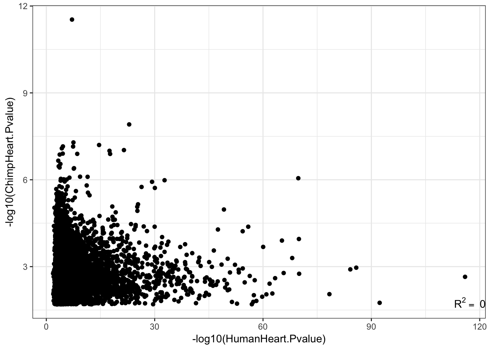
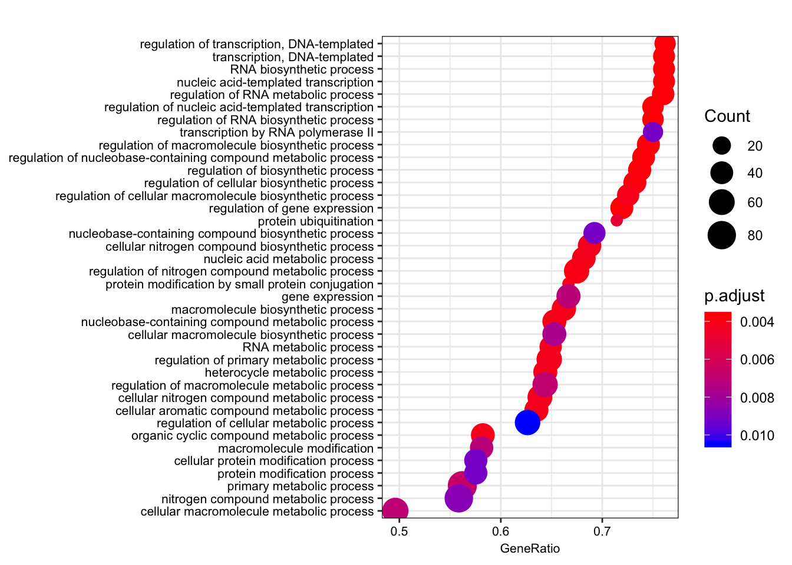

20190521_eQTL_enrichmentCrossSpecies
Ben Fair
5/21/2019
Last updated: 2019-06-12
Checks: 5 2
Knit directory: Comparative_eQTL/analysis/
This reproducible R Markdown analysis was created with workflowr (version 1.4.0). The Checks tab describes the reproducibility checks that were applied when the results were created. The Past versions tab lists the development history.
The R Markdown file has unstaged changes. To know which version of the R Markdown file created these results, you’ll want to first commit it to the Git repo. If you’re still working on the analysis, you can ignore this warning. When you’re finished, you can run wflow_publish to commit the R Markdown file and build the HTML.
Great job! The global environment was empty. Objects defined in the global environment can affect the analysis in your R Markdown file in unknown ways. For reproduciblity it’s best to always run the code in an empty environment.
The command set.seed(20190319) was run prior to running the code in the R Markdown file. Setting a seed ensures that any results that rely on randomness, e.g. subsampling or permutations, are reproducible.
Great job! Recording the operating system, R version, and package versions is critical for reproducibility.
- GO-2,
- GO-3
- GO-analysis
To ensure reproducibility of the results, delete the cache directory 20190521_eQTL_CrossSpeciesEnrichment_cache and re-run the analysis. To have workflowr automatically delete the cache directory prior to building the file, set delete_cache = TRUE when running wflow_build() or wflow_publish().
Great job! Using relative paths to the files within your workflowr project makes it easier to run your code on other machines.
Great! You are using Git for version control. Tracking code development and connecting the code version to the results is critical for reproducibility. The version displayed above was the version of the Git repository at the time these results were generated.
Note that you need to be careful to ensure that all relevant files for the analysis have been committed to Git prior to generating the results (you can use wflow_publish or wflow_git_commit). workflowr only checks the R Markdown file, but you know if there are other scripts or data files that it depends on. Below is the status of the Git repository when the results were generated:
Ignored files:
Ignored: .DS_Store
Ignored: .Rhistory
Ignored: .Rproj.user/
Ignored: analysis/.DS_Store
Ignored: analysis/20190521_eQTL_CrossSpeciesEnrichment_cache/
Ignored: analysis/figure/
Ignored: analysis_temp/.DS_Store
Ignored: code/.DS_Store
Ignored: code/snakemake_workflow/.DS_Store
Ignored: data/.DS_Store
Ignored: data/PastAnalysesDataToKeep/.DS_Store
Ignored: docs/.DS_Store
Ignored: docs/assets/.DS_Store
Untracked files:
Untracked: analysis/20190606_eGene_Conservation_TopN.Rmd
Unstaged changes:
Modified: analysis/20190521_eQTL_CrossSpeciesEnrichment.Rmd
Note that any generated files, e.g. HTML, png, CSS, etc., are not included in this status report because it is ok for generated content to have uncommitted changes.
These are the previous versions of the R Markdown and HTML files. If you’ve configured a remote Git repository (see ?wflow_git_remote), click on the hyperlinks in the table below to view them.
| File | Version | Author | Date | Message |
|---|---|---|---|---|
| Rmd | 7ef6fe2 | Benjmain Fair | 2019-06-11 | update site |
| html | 7ef6fe2 | Benjmain Fair | 2019-06-11 | update site |
library(plyr)
library(tidyverse)
library(knitr)
library(data.table)
library(ggpmisc)
library("clusterProfiler")
library("org.Hs.eg.db")
library(gridExtra)
library(enrichplot)Here the dataset is eQTLs called from a model with the following pre-testing filters/transformations/checks:
- cis-window=250kB
- MAF>10%
- genes tested must have >6 reads in 80% of samples
- lmm with genetic relatedness matrix produced by gemma
- Gene expression is standardized and normalized
- 10PCs added as covariates
- FDR estimated by Storey’s qvalue
- Pvalues well calibrated under a permutated null
First, Read in the data…
eQTLs <- read.table(gzfile("../data/PastAnalysesDataToKeep/20190521_eQTLs_250kB_10MAF.txt.gz"), header=T)
kable(head(eQTLs))| snps | gene | beta | statistic | pvalue | FDR | qvalue |
|---|---|---|---|---|---|---|
| ID.1.126459696.ACCCTAGTAAG.A | ENSPTRG00000001061 | 3.570039 | 12.50828 | 0 | 3.5e-06 | 3.5e-06 |
| ID.1.126465687.TTGT.A | ENSPTRG00000001061 | 3.570039 | 12.50828 | 0 | 3.5e-06 | 3.5e-06 |
| ID.1.126465750.TG.CT | ENSPTRG00000001061 | 3.570039 | 12.50828 | 0 | 3.5e-06 | 3.5e-06 |
| ID.1.126465756.T.C | ENSPTRG00000001061 | 3.570039 | 12.50828 | 0 | 3.5e-06 | 3.5e-06 |
| ID.1.126465766.C.A | ENSPTRG00000001061 | 3.570039 | 12.50828 | 0 | 3.5e-06 | 3.5e-06 |
| ID.1.126465774.G.A | ENSPTRG00000001061 | 3.570039 | 12.50828 | 0 | 3.5e-06 | 3.5e-06 |
# List of chimp tested genes
ChimpTestedGenes <- rownames(read.table('../output/ExpressionMatrix.un-normalized.txt.gz', header=T, check.names=FALSE, row.names = 1))
ChimpToHumanGeneMap <- read.table("../data/Biomart_export.Hsap.Ptro.orthologs.txt.gz", header=T, sep='\t', stringsAsFactors = F)
kable(head(ChimpToHumanGeneMap))| Gene.stable.ID | Transcript.stable.ID | Chimpanzee.gene.stable.ID | Chimpanzee.gene.name | Chimpanzee.protein.or.transcript.stable.ID | Chimpanzee.homology.type | X.id..target.Chimpanzee.gene.identical.to.query.gene | X.id..query.gene.identical.to.target.Chimpanzee.gene | dN.with.Chimpanzee | dS.with.Chimpanzee | Chimpanzee.orthology.confidence..0.low..1.high. |
|---|---|---|---|---|---|---|---|---|---|---|
| ENSG00000198888 | ENST00000361390 | ENSPTRG00000042641 | MT-ND1 | ENSPTRP00000061407 | ortholog_one2one | 94.6541 | 94.6541 | 0.0267 | 0.5455 | 1 |
| ENSG00000198763 | ENST00000361453 | ENSPTRG00000042626 | MT-ND2 | ENSPTRP00000061406 | ortholog_one2one | 96.2536 | 96.2536 | 0.0185 | 0.7225 | 1 |
| ENSG00000210127 | ENST00000387392 | ENSPTRG00000042642 | MT-TA | ENSPTRT00000076396 | ortholog_one2one | 100.0000 | 100.0000 | NA | NA | NA |
| ENSG00000198804 | ENST00000361624 | ENSPTRG00000042657 | MT-CO1 | ENSPTRP00000061408 | ortholog_one2one | 98.8304 | 98.8304 | 0.0065 | 0.5486 | 1 |
| ENSG00000198712 | ENST00000361739 | ENSPTRG00000042660 | MT-CO2 | ENSPTRP00000061402 | ortholog_one2one | 97.7974 | 97.7974 | 0.0106 | 0.5943 | 1 |
| ENSG00000228253 | ENST00000361851 | ENSPTRG00000042653 | MT-ATP8 | ENSPTRP00000061400 | ortholog_one2one | 94.1176 | 94.1176 | 0.0325 | 0.3331 | 1 |
# Of this ortholog list, how many genes are one2one
table(ChimpToHumanGeneMap$Chimpanzee.homology.type)
ortholog_many2many ortholog_one2many ortholog_one2one
2278 19917 140351 OneToOneMap <- ChimpToHumanGeneMap %>%
filter(Chimpanzee.homology.type=="ortholog_one2one")
# Read gtex heart egene list
# Only consider those that were tested in both species and are one2one orthologs
GtexHeartEgenes <- read.table("../data/Heart_Left_Ventricle.v7.egenes.txt.gz", header=T, sep='\t', stringsAsFactors = F) %>%
mutate(gene_id_stable = gsub(".\\d+$","",gene_id)) %>%
filter(gene_id_stable %in% OneToOneMap$Gene.stable.ID) %>%
mutate(chimp_id = plyr::mapvalues(gene_id_stable, OneToOneMap$Gene.stable.ID, OneToOneMap$Chimpanzee.gene.stable.ID, warn_missing = F)) %>%
filter(chimp_id %in% ChimpTestedGenes)
ChimpToHuman.ID <- function(Chimp.ID){
#function to convert chimp ensembl to human ensembl gene ids
return(
plyr::mapvalues(Chimp.ID, OneToOneMap$Chimpanzee.gene.stable.ID, OneToOneMap$Gene.stable.ID, warn_missing = F)
)}Now compare with GTEx by making 2x2 contigency table (eGene/not-eGene in Chimp/human). The odds ratio from this table is symetrical.
HumanFDR <- 0.1
ChimpFDR <- 0.1
#Get chimp eQTLs
Chimp_eQTLs <- eQTLs %>%
filter(qvalue<ChimpFDR)
# Count chimp eGenes
length(unique(Chimp_eQTLs$gene))[1] 336# Count human eGenes
length(GtexHeartEgenes %>% filter(qval< HumanFDR) %>% pull(chimp_id))[1] 5410# Count number genes tested in both species (already filtered for 1to1 orthologs)
length(GtexHeartEgenes$gene_id_stable)[1] 11586The number of human eGenes is huge (about half of all tested genes) and GTEx over-powered compared to chimp. With huge power, everything is an eGene and the eGene classification becomes devoid of meaningful information. So I will play with different ways to classify human eGenes.
#Change FDR thresholds or take top N eGenes by qvalue
HumanTopN <- 600
HumanFDR <- 0.1
ChimpFDR <- 0.1
# Filter human eGenes by qval threshold
HumanSigGenes <- GtexHeartEgenes %>% filter(qval<HumanFDR) %>% pull(chimp_id)
# Filter human eGenes by topN qval
# HumanSigGenes <- GtexHeartEgenes %>% top_n(-HumanTopN, qval) %>% pull(chimp_id)
# Filter human eGeness by qval threshold then topN betas
# HumanSigGenes <- GtexHeartEgenes %>% filter(qval<HumanFDR) %>% top_n(1000, abs(slope)) %>% pull(chimp_id)
HumanNonSigGenes <- GtexHeartEgenes %>%
filter(!chimp_id %in% HumanSigGenes) %>%
pull(chimp_id)
ChimpSigGenes <- GtexHeartEgenes %>%
filter(chimp_id %in% Chimp_eQTLs$gene) %>%
pull(chimp_id)
ChimpNonSigGenes <- GtexHeartEgenes %>%
filter(! chimp_id %in% Chimp_eQTLs$gene) %>%
pull(chimp_id)
ContigencyTable <- matrix( c( length(intersect(ChimpSigGenes,HumanSigGenes)),
length(intersect(HumanSigGenes,ChimpNonSigGenes)),
length(intersect(ChimpSigGenes,HumanNonSigGenes)),
length(intersect(ChimpNonSigGenes,HumanNonSigGenes))),
nrow = 2)
rownames(ContigencyTable) <- c("Chimp eGene", "Not Chimp eGene")
colnames(ContigencyTable) <- c("Human eGene", "Not human eGene")
#what is qval threshold for human eGene classification in this contigency table
print(GtexHeartEgenes %>% top_n(-HumanTopN, qval) %>% top_n(1, qval) %>% pull(qval))[1] 5.83223e-12#Contigency table of one to one orthologs tested in both chimps and humans of whether significant in humans, or chimps, or both, or neither
ContigencyTable Human eGene Not human eGene
Chimp eGene 145 135
Not Chimp eGene 5265 6041#One-sided Fisher test for greater overlap than expected by chance
fisher.test(ContigencyTable, alternative="greater")
Fisher's Exact Test for Count Data
data: ContigencyTable
p-value = 0.04779
alternative hypothesis: true odds ratio is greater than 1
95 percent confidence interval:
1.002643 Inf
sample estimates:
odds ratio
1.232354 The above contingency table and one-sided fisher test indicated a greater-than-chance overlap between the sets of eGenes in chimp and human.
A few plots might give me a better intuition for thinking about the data…
# Plot betas vs qval for GTEx for qval<0.1
GtexHeartEgenes %>% filter(qval<0.1) %>%
ggplot(aes(x=slope, y=-log10(qval))) +
geom_point(alpha=0.05)
| Version | Author | Date |
|---|---|---|
| 7ef6fe2 | Benjmain Fair | 2019-06-11 |
HumanAndChimpEffectSizes <- Chimp_eQTLs %>%
group_by(gene) %>%
dplyr::slice(which.min(qvalue)) %>%
ungroup() %>%
left_join((GtexHeartEgenes %>% filter(qval<0.1)), by=c("gene"="chimp_id")) %>%
dplyr::select(gene, slope, beta)Warning: Column `gene`/`chimp_id` joining factor and character vector,
coercing into character vector# For shared eGenes, are scatter plot of absolute value of betas
ggplot(HumanAndChimpEffectSizes, aes(x=log10(abs(slope)), y=log10(abs(beta)))) +
geom_point() +
geom_smooth(method = "lm") +
theme_bw() +
xlim(c(-1,1)) +
ylim(c(-1,1)) +
xlab("Human |beta|") +
ylab("Chimp |beta|")Warning: Removed 191 rows containing non-finite values (stat_smooth).Warning: Removed 191 rows containing missing values (geom_point).
| Version | Author | Date |
|---|---|---|
| 7ef6fe2 | Benjmain Fair | 2019-06-11 |
cor.test(HumanAndChimpEffectSizes$slope, HumanAndChimpEffectSizes$beta,method='spearman')
Spearman's rank correlation rho
data: HumanAndChimpEffectSizes$slope and HumanAndChimpEffectSizes$beta
S = 476920, p-value = 0.4633
alternative hypothesis: true rho is not equal to 0
sample estimates:
rho
0.06132499 Effect sizes for cross-species eGenes appear uncorrelated. This might at first appear at odds with the greater-than-chance overlap for the same set of eGenes across sepecies. However, one explanation is that the above effect sizes analysis didn’t consider non eGenes for which the null of effect-size=0 could not be rejected.
OK, so now I will perform the same Odds ratio estimate and Fisher exact test for different thresholds/quantiles of the human data ordered by significance.
ChimpFDR <- 0.1
HumanFDR <- 0.1
Chimp_eQTLs <- eQTLs %>%
filter(qvalue<ChimpFDR)
ChimpSigGenes <- GtexHeartEgenes %>%
filter(chimp_id %in% Chimp_eQTLs$gene) %>%
pull(chimp_id)
ChimpNonSigGenes <- GtexHeartEgenes %>%
filter(! chimp_id %in% Chimp_eQTLs$gene) %>%
pull(chimp_id)
LengthOut=200
TopHumanEgeneCountList <- round(seq(100,5410, length.out=LengthOut))
OddsRatiosList <- rep(0,LengthOut)
CI.lower <- rep(0,LengthOut)
CI.upper <- rep(0,LengthOut)
for (i in seq_along(TopHumanEgeneCountList)){
HumanTopN <- TopHumanEgeneCountList[i]
# Filter human eGenes by qval threshold
# HumanSigGenes <- GtexHeartEgenes %>% filter(qval<HumanFDR) %>% pull(chimp_id)
# Filter human eGenes by topN qval
HumanSigGenes <- GtexHeartEgenes %>% top_n(-HumanTopN, qval) %>% pull(chimp_id)
# Filter human eGeness by qval threshold then topN betas
# HumanSigGenes <- GtexHeartEgenes %>% filter(qval<HumanFDR) %>% top_n(1000, abs(slope)) %>% pull(chimp_id)
HumanNonSigGenes <- GtexHeartEgenes %>%
filter(!chimp_id %in% HumanSigGenes) %>%
pull(chimp_id)
ContigencyTable <- matrix( c( length(intersect(ChimpSigGenes,HumanSigGenes)),
length(intersect(HumanSigGenes,ChimpNonSigGenes)),
length(intersect(ChimpSigGenes,HumanNonSigGenes)),
length(intersect(ChimpNonSigGenes,HumanNonSigGenes))),
nrow = 2)
#Contigency table of one to one orthologs tested in both chimps and humans of whether significant in humans, or chimps, or both, or neither
ContigencyTable
A<-fisher.test(ContigencyTable, conf.int=T)
OddsRatiosList[i]<- as.numeric(A$estimate)
CI.lower[i] <- as.numeric(A$conf.int[1])
CI.upper[i] <- as.numeric(A$conf.int[2])
}
HeartOddsRatios <- data.frame(TopHumanEgeneCountList=TopHumanEgeneCountList, OddsRatio=OddsRatiosList, GTEx.Tissue="Heart_LeftVentricle", CI.lower=CI.lower, CI.upper=CI.upper)
ggplot(HeartOddsRatios, aes(x=TopHumanEgeneCountList, y=OddsRatiosList)) +
geom_point() +
geom_ribbon(aes(ymin=CI.lower, ymax=CI.upper), alpha=0.2) +
theme_bw() +
ylab("Odds Ratio") +
xlab("Considering only top X human eGenes") +
geom_hline(yintercept=1, linetype="dashed")
| Version | Author | Date |
|---|---|---|
| 7ef6fe2 | Benjmain Fair | 2019-06-11 |
Now do the same for a couple of GTEx tissues
GTEx.eGene.Files <- c("../data/Heart_Left_Ventricle.v7.egenes.txt.gz",
"../data/Adipose_Subcutaneous.v7.egenes.txt.gz",
# "../data/Cells_EBV-transformed_lymphocytes.v7.egenes.txt.gz",
"../data/Thyroid.v7.egenes.txt.gz",
"../data/Lung.v7.egenes.txt.gz")
GTEx.tissue.labels <- c("Heart_Left_Ventricle",
"Adipose_Subcutaneous",
# "LCL",
"Thyroid",
"Lung")
OddsRatios.rbinded <- data.frame()
for (j in seq_along(GTEx.eGene.Files)){
paste0("processing")
GtexEgenes <- read.table(GTEx.eGene.Files[j], header=T, sep='\t', stringsAsFactors = F) %>%
mutate(gene_id_stable = gsub(".\\d+$","",gene_id)) %>%
filter(gene_id_stable %in% OneToOneMap$Gene.stable.ID) %>%
mutate(chimp_id = plyr::mapvalues(gene_id_stable, OneToOneMap$Gene.stable.ID, OneToOneMap$Chimpanzee.gene.stable.ID, warn_missing = F)) %>%
filter(chimp_id %in% ChimpTestedGenes)
LengthOut=200
TopHumanEgeneCountList <- round(seq(100,5410, length.out=LengthOut))
OddsRatiosList <- rep(0,LengthOut)
CI.lower <- rep(0,LengthOut)
CI.upper <- rep(0,LengthOut)
for (i in seq_along(TopHumanEgeneCountList)){
HumanTopN <- TopHumanEgeneCountList[i]
# Filter human eGenes by qval threshold
# HumanSigGenes <- GtexHeartEgenes %>% filter(qval<HumanFDR) %>% pull(chimp_id)
# Filter human eGenes by topN qval
HumanSigGenes <- GtexEgenes %>% top_n(-HumanTopN, qval) %>% pull(chimp_id)
HumanNonSigGenes <- GtexEgenes %>%
filter(!chimp_id %in% HumanSigGenes) %>%
pull(chimp_id)
ContigencyTable <- matrix( c( length(intersect(ChimpSigGenes,HumanSigGenes)),
length(intersect(HumanSigGenes,ChimpNonSigGenes)),
length(intersect(ChimpSigGenes,HumanNonSigGenes)),
length(intersect(ChimpNonSigGenes,HumanNonSigGenes))),
nrow = 2)
#Contigency table of one to one orthologs tested in both chimps and humans of whether significant in humans, or chimps, or both, or neither
A<-fisher.test(ContigencyTable, conf.int=T)
OddsRatiosList[i]<- as.numeric(A$estimate)
CI.lower[i] <- as.numeric(A$conf.int[1])
CI.upper[i] <- as.numeric(A$conf.int[2])
}
OddsRatios <- data.frame(HumanEgeneThreshold=TopHumanEgeneCountList, OR=OddsRatiosList, GTEx.Tissue=GTEx.tissue.labels[j], CI.lower=CI.lower, CI.upper=CI.upper)
OddsRatios.rbinded <- rbind(OddsRatios.rbinded, OddsRatios)
}
ggplot(OddsRatios.rbinded, aes(x=HumanEgeneThreshold, y=OR, color=GTEx.Tissue)) +
geom_line(size=2) +
geom_ribbon(aes(ymin=CI.lower, ymax=CI.upper, fill = GTEx.Tissue), alpha=0.1,linetype = 3) +
theme_bw() +
ylab("Odds Ratio") +
xlab("Considering only top X human eGenes") +
geom_hline(yintercept=1, linetype="dashed") +
ylim(c(0,4)) +
theme(legend.position="top")
| Version | Author | Date |
|---|---|---|
| 7ef6fe2 | Benjmain Fair | 2019-06-11 |
Try one alternative way to present these odds ratios as a function of eGene stringency:
# Get qval ordered ordered list of Chimp genes (that were tested in both)
Chimp_OrderedGenes <- eQTLs %>%
group_by(gene) %>%
dplyr::slice(which.min(qvalue)) %>%
filter(gene %in% GtexHeartEgenes$chimp_id) %>%
arrange(qvalue) %>%
as.data.frame()
# Get qval ordered list of human genes
Human_OrderedGenes <- GtexHeartEgenes %>%
arrange(qval)
LengthOut=60
ChimpEgeneCount <- Chimp_OrderedGenes %>% filter(qvalue<0.2) %>% pull(qvalue) %>% length()
HumanEgeneCount <- Human_OrderedGenes %>% filter(qval<0.2) %>% pull(qval) %>% length()
TopHumanEgeneCountList <- round(seq(1,HumanEgeneCount, by=50))[-1]
TopChimpEgeneCountList <- round(seq(1,ChimpEgeneCount, by=25))[-1]
OddsRatioMatrix <- matrix(nrow = length(TopHumanEgeneCountList), ncol = length(TopChimpEgeneCountList))
for (i in seq_along(TopHumanEgeneCountList)){
HumanTopN <- TopHumanEgeneCountList[i]
# Filter human eGenes by topN qval
HumanSigGenes <- Human_OrderedGenes %>% top_n(-HumanTopN, qval) %>% pull(chimp_id)
HumanNonSigGenes <- Human_OrderedGenes %>%
filter(!chimp_id %in% HumanSigGenes) %>%
pull(chimp_id)
for (j in seq_along(TopChimpEgeneCountList)){
TopChimpN <- TopChimpEgeneCountList[j]
ChimpSigGenes <- Chimp_OrderedGenes %>% top_n(-TopChimpN, qvalue) %>% pull(gene)
ChimpNonSigGenes <- GtexHeartEgenes %>%
filter(!chimp_id %in% ChimpSigGenes) %>%
pull(chimp_id)
ContigencyTable <- matrix( c( length(intersect(ChimpSigGenes,HumanSigGenes)),
length(intersect(HumanSigGenes,ChimpNonSigGenes)),
length(intersect(ChimpSigGenes,HumanNonSigGenes)),
length(intersect(ChimpNonSigGenes,HumanNonSigGenes))),
nrow = 2)
A<-fisher.test(ContigencyTable, conf.int=F)
OddsRatioMatrix[i,j] <- (as.numeric(A$estimate))
}
}
row.names(OddsRatioMatrix) <- TopHumanEgeneCountList
colnames(OddsRatioMatrix) <- TopChimpEgeneCountList
melt(OddsRatioMatrix) %>%
dplyr::rename(OddsRatio=value) %>%
ggplot(aes(x=as.numeric(Var1),y=as.numeric(Var2), fill=OddsRatio)) +
geom_raster(interpolate=F) +
xlab("Top N human eGenes") +
ylab("Top N chimp eGenes") +
scale_y_continuous(expand = c(0,0)) +
scale_x_continuous(expand = c(0,0)) +
scale_fill_distiller(palette = "Spectral") +
# coord_fixed(ratio = 1, xlim = NULL, ylim = NULL, expand = F, clip = "on") +
geom_vline(xintercept=7555, colour="grey") +
geom_text(aes(x=7555, label="FDR=0.2", y=400), angle=90, vjust = 0, color="grey", size=4)+
geom_vline(xintercept=5410, colour="grey") +
geom_text(aes(x=5410, label="FDR=0.1", y=400), angle=90, vjust = 0, color="grey", size=4)+
geom_vline(xintercept=4240, colour="grey") +
geom_text(aes(x=4240, label="FDR=0.05", y=400), angle=90, vjust = 0, color="grey", size=4)+
geom_hline(yintercept=731, colour="grey") +
geom_text(aes(x=2000, label="FDR=0.2", y=731-50), vjust = 0, color="grey", size=4)+
geom_hline(yintercept=280, colour="grey") +
geom_text(aes(x=2000, label="FDR=0.1", y=280-50), vjust = 0, color="grey", size=4)+
geom_hline(yintercept=98, colour="grey") +
geom_text(aes(x=2000, label="FDR=0.05", y=98-50), vjust = 0, color="grey", size=4)+
theme_bw() +
theme(legend.position="bottom")
| Version | Author | Date |
|---|---|---|
| 7ef6fe2 | Benjmain Fair | 2019-06-11 |
Gene ontology overlap analysis of genes that are Chimp eGenes but not human eGenes. The interpretation is that this is a somewhat prioritized list of candidate genes under stabilizing selection in the human lineage.
#Change FDR thresholds or take top N eGenes by qvalue
HumanFDR <- 0.1
ChimpFDR <- 0.1
HumanTopN <- 600
Chimp_eQTLs <- eQTLs %>%
filter(qvalue<ChimpFDR)
# Filter human eGenes by qval threshold
HumanSigGenes <- GtexHeartEgenes %>% filter(qval<HumanFDR) %>% pull(chimp_id)
# HumanSigGenes <- GtexHeartEgenes %>% top_n(-HumanTopN, qval) %>% pull(chimp_id)
HumanNonSigGenes <- GtexHeartEgenes %>%
filter(!chimp_id %in% HumanSigGenes) %>%
pull(chimp_id)
ChimpSigGenes <- GtexHeartEgenes %>%
filter(chimp_id %in% Chimp_eQTLs$gene) %>%
pull(chimp_id)
ChimpNonSigGenes <- GtexHeartEgenes %>%
filter(! chimp_id %in% Chimp_eQTLs$gene) %>%
pull(chimp_id)
ContigencyTable <- matrix( c( length(intersect(ChimpSigGenes,HumanSigGenes)),
length(intersect(HumanSigGenes,ChimpNonSigGenes)),
length(intersect(ChimpSigGenes,HumanNonSigGenes)),
length(intersect(ChimpNonSigGenes,HumanNonSigGenes))),
nrow = 2)
rownames(ContigencyTable) <- c("Chimp eGene", "Not Chimp eGene")
colnames(ContigencyTable) <- c("Human eGene", "Not human eGene")
#Contigency table of one to one orthologs tested in both chimps and humans of whether significant in humans, or chimps, or both, or neither
ContigencyTable Human eGene Not human eGene
Chimp eGene 145 135
Not Chimp eGene 5265 6041Now that we have a contingency table of eGenes between chimp and human, lets do gene set enrichment analysis. This analysis uses clusterProfiler package to look for gene set enrichment in a foreground set of genes over a background set. For each foreground/background comparison, there will be a gene ontology enrichment for the GO subcategories of - biological process (bp) - cellular component (cc) - molecular function (mf)
Perhaps first most intuitive comparison to make is:
Foreground = Chimp eGene & not human eGene
background = All genes tested in both species
foreground = ChimpToHuman.ID(intersect(ChimpSigGenes,HumanNonSigGenes))
background = ChimpToHuman.ID(GtexHeartEgenes$chimp_id)
length(foreground)[1] 135length(background)[1] 11586ego.mf <- enrichGO(gene = foreground,
universe = background,
OrgDb = org.Hs.eg.db,
keyType = 'ENSEMBL',
ont = "MF",
pAdjustMethod = "BH",
pvalueCutoff = 0.01,
qvalueCutoff = 0.05)
kable(head(as.data.frame(ego.mf)))| ID | Description | GeneRatio | BgRatio | pvalue | p.adjust | qvalue | geneID | Count |
|---|
ego.bp <- enrichGO(gene = foreground,
universe = background,
OrgDb = org.Hs.eg.db,
keyType = 'ENSEMBL',
ont = "BP",
pAdjustMethod = "BH",
pvalueCutoff = 0.01,
qvalueCutoff = 0.05)
kable(head(as.data.frame(ego.bp)))| ID | Description | GeneRatio | BgRatio | pvalue | p.adjust | qvalue | geneID | Count |
|---|
ego.cc <- enrichGO(gene = foreground,
universe = background,
OrgDb = org.Hs.eg.db,
keyType = 'ENSEMBL',
ont = "CC",
pAdjustMethod = "BH",
pvalueCutoff = 0.01,
qvalueCutoff = 0.05)
kable(head(as.data.frame(ego.cc)))| ID | Description | GeneRatio | BgRatio | pvalue | p.adjust | qvalue | geneID | Count |
|---|
Nothing enriched by this comparison of gene sets. Perhaps a more appropriate foreground/background set is:
foreground = chimp specific eGenes
background = all chimp eGenes
foreground = ChimpToHuman.ID(intersect(ChimpSigGenes,HumanNonSigGenes))
background = ChimpToHuman.ID(ChimpSigGenes)
length(foreground)[1] 135length(background)[1] 280ego.mf <- enrichGO(gene = foreground,
universe = background,
OrgDb = org.Hs.eg.db,
keyType = 'ENSEMBL',
ont = "MF",
pAdjustMethod = "BH",
pvalueCutoff = 0.01,
qvalueCutoff = 0.05)
kable(head(as.data.frame(ego.mf)))| ID | Description | GeneRatio | BgRatio | pvalue | p.adjust | qvalue | geneID | Count | |
|---|---|---|---|---|---|---|---|---|---|
| GO:0003676 | GO:0003676 | nucleic acid binding | 40/127 | 54/256 | 3.91e-05 | 0.0026993 | 0.0025943 | ENSG00000159208/ENSG00000158796/ENSG00000153187/ENSG00000184898/ENSG00000163602/ENSG00000114127/ENSG00000072274/ENSG00000114503/ENSG00000151623/ENSG00000164342/ENSG00000124279/ENSG00000113643/ENSG00000037241/ENSG00000106261/ENSG00000165061/ENSG00000185122/ENSG00000196150/ENSG00000147854/ENSG00000107371/ENSG00000125484/ENSG00000150593/ENSG00000211450/ENSG00000170325/ENSG00000134283/ENSG00000075856/ENSG00000139718/ENSG00000061936/ENSG00000173575/ENSG00000178952/ENSG00000102974/ENSG00000102984/ENSG00000167513/ENSG00000125457/ENSG00000185504/ENSG00000141646/ENSG00000181007/ENSG00000128000/ENSG00000090971/ENSG00000204519/ENSG00000152454 | 40 |
ego.bp <- enrichGO(gene = foreground,
universe = background,
OrgDb = org.Hs.eg.db,
keyType = 'ENSEMBL',
ont = "BP",
pAdjustMethod = "BH",
pvalueCutoff = 0.01,
qvalueCutoff = 0.05)
kable(head(as.data.frame(ego.bp)))| ID | Description | GeneRatio | BgRatio | pvalue | p.adjust | qvalue | geneID | Count | |
|---|---|---|---|---|---|---|---|---|---|
| GO:0051252 | GO:0051252 | regulation of RNA metabolic process | 39/122 | 50/255 | 1.4e-06 | 0.0005097 | 0.0003559 | ENSG00000159208/ENSG00000159388/ENSG00000153187/ENSG00000123609/ENSG00000163602/ENSG00000114127/ENSG00000114503/ENSG00000157404/ENSG00000118785/ENSG00000168743/ENSG00000151623/ENSG00000151718/ENSG00000164342/ENSG00000124279/ENSG00000152409/ENSG00000078401/ENSG00000106261/ENSG00000161057/ENSG00000164758/ENSG00000185122/ENSG00000196150/ENSG00000107371/ENSG00000171862/ENSG00000150593/ENSG00000170325/ENSG00000134283/ENSG00000094916/ENSG00000075856/ENSG00000061936/ENSG00000173575/ENSG00000102974/ENSG00000102984/ENSG00000167513/ENSG00000141646/ENSG00000181007/ENSG00000128000/ENSG00000090971/ENSG00000204519/ENSG00000152454 | 39 |
| GO:0019219 | GO:0019219 | regulation of nucleobase-containing compound metabolic process | 41/122 | 54/255 | 2.5e-06 | 0.0005097 | 0.0003559 | ENSG00000159208/ENSG00000159388/ENSG00000153187/ENSG00000123609/ENSG00000163602/ENSG00000114127/ENSG00000072274/ENSG00000114503/ENSG00000157404/ENSG00000118785/ENSG00000168743/ENSG00000151623/ENSG00000151718/ENSG00000164342/ENSG00000124279/ENSG00000152409/ENSG00000078401/ENSG00000106261/ENSG00000161057/ENSG00000164758/ENSG00000185122/ENSG00000196150/ENSG00000107371/ENSG00000170312/ENSG00000171862/ENSG00000150593/ENSG00000170325/ENSG00000134283/ENSG00000094916/ENSG00000075856/ENSG00000061936/ENSG00000173575/ENSG00000102974/ENSG00000102984/ENSG00000167513/ENSG00000141646/ENSG00000181007/ENSG00000128000/ENSG00000090971/ENSG00000204519/ENSG00000152454 | 41 |
| GO:0051171 | GO:0051171 | regulation of nitrogen compound metabolic process | 57/122 | 83/255 | 3.0e-06 | 0.0005097 | 0.0003559 | ENSG00000121769/ENSG00000159208/ENSG00000159388/ENSG00000153187/ENSG00000172985/ENSG00000163083/ENSG00000123609/ENSG00000163359/ENSG00000163376/ENSG00000163602/ENSG00000114127/ENSG00000072274/ENSG00000114503/ENSG00000163975/ENSG00000157404/ENSG00000118785/ENSG00000168743/ENSG00000151623/ENSG00000151718/ENSG00000164342/ENSG00000124279/ENSG00000152409/ENSG00000055163/ENSG00000078401/ENSG00000106261/ENSG00000161057/ENSG00000164758/ENSG00000185122/ENSG00000196150/ENSG00000107140/ENSG00000107371/ENSG00000170312/ENSG00000171862/ENSG00000138166/ENSG00000150593/ENSG00000154127/ENSG00000170325/ENSG00000134283/ENSG00000094916/ENSG00000075856/ENSG00000061936/ENSG00000133116/ENSG00000173575/ENSG00000150281/ENSG00000102974/ENSG00000102984/ENSG00000167513/ENSG00000109062/ENSG00000125457/ENSG00000141646/ENSG00000181007/ENSG00000128000/ENSG00000090971/ENSG00000204519/ENSG00000152454/ENSG00000100985/ENSG00000099958 | 57 |
| GO:0010556 | GO:0010556 | regulation of macromolecule biosynthetic process | 41/122 | 55/255 | 6.0e-06 | 0.0006226 | 0.0004347 | ENSG00000159208/ENSG00000159388/ENSG00000153187/ENSG00000163083/ENSG00000123609/ENSG00000163376/ENSG00000163602/ENSG00000114127/ENSG00000114503/ENSG00000157404/ENSG00000118785/ENSG00000168743/ENSG00000151623/ENSG00000151718/ENSG00000164342/ENSG00000124279/ENSG00000152409/ENSG00000164219/ENSG00000078401/ENSG00000106261/ENSG00000161057/ENSG00000164758/ENSG00000185122/ENSG00000196150/ENSG00000170312/ENSG00000171862/ENSG00000150593/ENSG00000170325/ENSG00000134283/ENSG00000094916/ENSG00000173575/ENSG00000102974/ENSG00000102984/ENSG00000167513/ENSG00000125457/ENSG00000141646/ENSG00000181007/ENSG00000128000/ENSG00000090971/ENSG00000204519/ENSG00000152454 | 41 |
| GO:0009889 | GO:0009889 | regulation of biosynthetic process | 42/122 | 57/255 | 7.4e-06 | 0.0006226 | 0.0004347 | ENSG00000121769/ENSG00000159208/ENSG00000159388/ENSG00000153187/ENSG00000163083/ENSG00000123609/ENSG00000163376/ENSG00000163602/ENSG00000114127/ENSG00000114503/ENSG00000157404/ENSG00000118785/ENSG00000168743/ENSG00000151623/ENSG00000151718/ENSG00000164342/ENSG00000124279/ENSG00000152409/ENSG00000164219/ENSG00000078401/ENSG00000106261/ENSG00000161057/ENSG00000164758/ENSG00000185122/ENSG00000196150/ENSG00000170312/ENSG00000171862/ENSG00000150593/ENSG00000170325/ENSG00000134283/ENSG00000094916/ENSG00000173575/ENSG00000102974/ENSG00000102984/ENSG00000167513/ENSG00000125457/ENSG00000141646/ENSG00000181007/ENSG00000128000/ENSG00000090971/ENSG00000204519/ENSG00000152454 | 42 |
| GO:0010468 | GO:0010468 | regulation of gene expression | 42/122 | 57/255 | 7.4e-06 | 0.0006226 | 0.0004347 | ENSG00000159208/ENSG00000159388/ENSG00000153187/ENSG00000163376/ENSG00000163602/ENSG00000114127/ENSG00000114503/ENSG00000163975/ENSG00000157404/ENSG00000118785/ENSG00000168743/ENSG00000151623/ENSG00000151718/ENSG00000164342/ENSG00000124279/ENSG00000152409/ENSG00000078401/ENSG00000106261/ENSG00000161057/ENSG00000164758/ENSG00000185122/ENSG00000196150/ENSG00000107371/ENSG00000170312/ENSG00000171862/ENSG00000150593/ENSG00000170325/ENSG00000134283/ENSG00000094916/ENSG00000075856/ENSG00000061936/ENSG00000173575/ENSG00000102974/ENSG00000102984/ENSG00000167513/ENSG00000125457/ENSG00000141646/ENSG00000181007/ENSG00000128000/ENSG00000090971/ENSG00000204519/ENSG00000152454 | 42 |
ego.cc <- enrichGO(gene = foreground,
universe = background,
OrgDb = org.Hs.eg.db,
keyType = 'ENSEMBL',
ont = "CC",
pAdjustMethod = "BH",
pvalueCutoff = 0.01,
qvalueCutoff = 0.05)
kable(head(as.data.frame(ego.cc)))| ID | Description | GeneRatio | BgRatio | pvalue | p.adjust | qvalue | geneID | Count |
|---|
dotplot(ego.mf, font.size=8)
| Version | Author | Date |
|---|---|---|
| 7ef6fe2 | Benjmain Fair | 2019-06-11 |
dotplot(ego.bp, font.size=8)
| Version | Author | Date |
|---|---|---|
| 7ef6fe2 | Benjmain Fair | 2019-06-11 |
dotplot(ego.cc, font.size=8)
| Version | Author | Date |
|---|---|---|
| 7ef6fe2 | Benjmain Fair | 2019-06-11 |
Compare those that are shared species eGenes, with the interpretation that they would be enriched for things not under stabilizing selection in either, perhaps things like relatively useless pseudogenes.
foreground = shared eGenes
background = all genes tested in both species
foreground = ChimpToHuman.ID(intersect(ChimpSigGenes,HumanSigGenes))
background = ChimpToHuman.ID(GtexHeartEgenes$chimp_id)
length(foreground)[1] 145length(background)[1] 11586# foreground = ChimpToHuman.ID(intersect(ChimpSigGenes,(GtexHeartEgenes %>% top_n(-600, qval) %>% pull(chimp_id))))
# Could also use the more stringent intersection of chimp eGenes and top600 human eGenes. You get mostly the sae GO terms, including MHC complex
ego.mf <- enrichGO(gene = foreground,
universe = background,
OrgDb = org.Hs.eg.db,
keyType = 'ENSEMBL',
ont = "MF",
pAdjustMethod = "BH",
pvalueCutoff = 0.01,
qvalueCutoff = 0.05)
kable(head(as.data.frame(ego.mf)))| ID | Description | GeneRatio | BgRatio | pvalue | p.adjust | qvalue | geneID | Count | |
|---|---|---|---|---|---|---|---|---|---|
| GO:0042605 | GO:0042605 | peptide antigen binding | 7/129 | 19/10605 | 0.00e+00 | 0.0000004 | 0.0000004 | ENSG00000206503/ENSG00000234745/ENSG00000198502/ENSG00000196126/ENSG00000196735/ENSG00000237541/ENSG00000231389 | 7 |
| GO:0003823 | GO:0003823 | antigen binding | 8/129 | 37/10605 | 0.00e+00 | 0.0000016 | 0.0000016 | ENSG00000158473/ENSG00000206503/ENSG00000234745/ENSG00000198502/ENSG00000196126/ENSG00000196735/ENSG00000237541/ENSG00000231389 | 8 |
| GO:0042277 | GO:0042277 | peptide binding | 11/129 | 172/10605 | 7.50e-06 | 0.0007191 | 0.0007172 | ENSG00000134184/ENSG00000158473/ENSG00000169760/ENSG00000163697/ENSG00000206503/ENSG00000234745/ENSG00000198502/ENSG00000196126/ENSG00000196735/ENSG00000237541/ENSG00000231389 | 11 |
| GO:0033218 | GO:0033218 | amide binding | 11/129 | 221/10605 | 7.74e-05 | 0.0055310 | 0.0055167 | ENSG00000134184/ENSG00000158473/ENSG00000169760/ENSG00000163697/ENSG00000206503/ENSG00000234745/ENSG00000198502/ENSG00000196126/ENSG00000196735/ENSG00000237541/ENSG00000231389 | 11 |
ego.bp <- enrichGO(gene = foreground,
universe = background,
OrgDb = org.Hs.eg.db,
keyType = 'ENSEMBL',
ont = "BP",
pAdjustMethod = "BH",
pvalueCutoff = 0.01,
qvalueCutoff = 0.05)
kable(head(as.data.frame(ego.bp)))| ID | Description | GeneRatio | BgRatio | pvalue | p.adjust | qvalue | geneID | Count | |
|---|---|---|---|---|---|---|---|---|---|
| GO:0019884 | GO:0019884 | antigen processing and presentation of exogenous antigen | 9/133 | 96/10512 | 3.2e-06 | 0.0065215 | 0.0064726 | ENSG00000158473/ENSG00000206503/ENSG00000234745/ENSG00000198502/ENSG00000196126/ENSG00000196735/ENSG00000237541/ENSG00000231389/ENSG00000161800 | 9 |
ego.cc <- enrichGO(gene = foreground,
universe = background,
OrgDb = org.Hs.eg.db,
keyType = 'ENSEMBL',
ont = "CC",
pAdjustMethod = "BH",
pvalueCutoff = 0.01,
qvalueCutoff = 0.05)
kable(head(as.data.frame(ego.cc)))| ID | Description | GeneRatio | BgRatio | pvalue | p.adjust | qvalue | geneID | Count | |
|---|---|---|---|---|---|---|---|---|---|
| GO:0071556 | GO:0071556 | integral component of lumenal side of endoplasmic reticulum membrane | 8/136 | 21/10999 | 0.0e+00 | 0.00e+00 | 0.00e+00 | ENSG00000206503/ENSG00000234745/ENSG00000198502/ENSG00000196126/ENSG00000196735/ENSG00000237541/ENSG00000231389/ENSG00000005206 | 8 |
| GO:0098553 | GO:0098553 | lumenal side of endoplasmic reticulum membrane | 8/136 | 21/10999 | 0.0e+00 | 0.00e+00 | 0.00e+00 | ENSG00000206503/ENSG00000234745/ENSG00000198502/ENSG00000196126/ENSG00000196735/ENSG00000237541/ENSG00000231389/ENSG00000005206 | 8 |
| GO:0042611 | GO:0042611 | MHC protein complex | 7/136 | 18/10999 | 0.0e+00 | 1.00e-07 | 1.00e-07 | ENSG00000206503/ENSG00000234745/ENSG00000198502/ENSG00000196126/ENSG00000196735/ENSG00000237541/ENSG00000231389 | 7 |
| GO:0042613 | GO:0042613 | MHC class II protein complex | 5/136 | 12/10999 | 2.0e-07 | 1.31e-05 | 1.17e-05 | ENSG00000198502/ENSG00000196126/ENSG00000196735/ENSG00000237541/ENSG00000231389 | 5 |
| GO:0030660 | GO:0030660 | Golgi-associated vesicle membrane | 9/136 | 84/10999 | 9.0e-07 | 4.61e-05 | 4.10e-05 | ENSG00000206503/ENSG00000234745/ENSG00000198502/ENSG00000196126/ENSG00000196735/ENSG00000237541/ENSG00000231389/ENSG00000005206/ENSG00000242247 | 9 |
| GO:0012507 | GO:0012507 | ER to Golgi transport vesicle membrane | 7/136 | 47/10999 | 1.6e-06 | 6.96e-05 | 6.19e-05 | ENSG00000206503/ENSG00000234745/ENSG00000198502/ENSG00000196126/ENSG00000196735/ENSG00000237541/ENSG00000231389 | 7 |
dotplot(ego.mf, font.size=8)
| Version | Author | Date |
|---|---|---|
| 7ef6fe2 | Benjmain Fair | 2019-06-11 |
dotplot(ego.bp, font.size=8)
| Version | Author | Date |
|---|---|---|
| 7ef6fe2 | Benjmain Fair | 2019-06-11 |
dotplot(ego.cc, font.size=8)
| Version | Author | Date |
|---|---|---|
| 7ef6fe2 | Benjmain Fair | 2019-06-11 |
Interestingly, the MHC complex comes out of this analysis as enriched among the genes that are eGenes in both species, consistent with these genes being rapidly evolving targets of selection in between human/chimp, with high diversity in both species.
A complementart analysis to GO overlap is gene set enrichment analysis. Here I will perform GSEA on the chimp qvalue orded list of chimp/human shared eGenes and chimp specific eGenes based on FDR<0.1 in the human dataset…
Actually, maybe a more sensible thing to do is consider the human qvalue ordered list and then separate based on if chimp eGene or not. This is more similar to what the previous odds-ratio plots are.
HumanOrderedGenes <- GtexHeartEgenes %>%
arrange(qval) %>%
filter(chimp_id %in% ChimpSigGenes)
GeneList <- log10(HumanOrderedGenes$qval) * -1
names(GeneList) <- as.character(ChimpToHuman.ID(HumanOrderedGenes$chimp_id))
gsego.cc.shared <- gseGO(gene = GeneList,
OrgDb = org.Hs.eg.db,
keyType = 'ENSEMBL',
maxGSSize = 500,
# pvalueCutoff=0.8,
ont = "CC")
kable(head(as.data.frame(gsego.cc.shared)))
dotplot(gsego.cc.shared, font.size=8, showCategory=15)
gseaplot(gsego.cc.shared, geneSetID = "GO:0042611", pvalue_table = TRUE)That was still a work in progress that I may come back to one day… For now I will perform GSEA on ranked gene lists based on chimp FDR.
First, create chimp-qval-ordered gene list for genes that are human eGenes I expect this to return similar results as gene overlap analysis with forground as shared eGenes and background as all all genes tested. So this should return MHC complex among other things.
Chimp_OrderedGenes <- eQTLs %>%
group_by(gene) %>%
dplyr::slice(which.min(qvalue)) %>%
filter(gene %in% GtexHeartEgenes$chimp_id) %>%
arrange(qvalue) %>%
filter(gene %in% HumanSigGenes)
GeneList <- log10(Chimp_OrderedGenes$qvalue) * -1
names(GeneList) <- as.character(ChimpToHuman.ID(Chimp_OrderedGenes$gene))
gsego.cc.shared <- gseGO(gene = GeneList,
OrgDb = org.Hs.eg.db,
keyType = 'ENSEMBL',
maxGSSize = 500,
# pvalueCutoff=0.8,
ont = "CC",
nPerm = 10000)preparing geneSet collections...GSEA analysis...Warning in fgsea(pathways = geneSets, stats = geneList, nperm = nPerm, minSize = minGSSize, : There are ties in the preranked stats (38.71% of the list).
The order of those tied genes will be arbitrary, which may produce unexpected results.leading edge analysis...done...kable(head(as.data.frame(gsego.cc.shared)))| ID | Description | setSize | enrichmentScore | NES | pvalue | p.adjust | qvalues | rank | leading_edge | core_enrichment | |
|---|---|---|---|---|---|---|---|---|---|---|---|
| GO:0012507 | GO:0012507 | ER to Golgi transport vesicle membrane | 28 | 0.7104864 | 1.940217 | 0.0001007 | 0.0101562 | 0.0096857 | 436 | tags=39%, list=8%, signal=36% | ENSG00000196735/ENSG00000196126/ENSG00000206503/ENSG00000198502/ENSG00000237541/ENSG00000234745/ENSG00000231389/ENSG00000204525/ENSG00000148396/ENSG00000179344/ENSG00000223865 |
| GO:0071556 | GO:0071556 | integral component of lumenal side of endoplasmic reticulum membrane | 16 | 0.8600123 | 2.186654 | 0.0001034 | 0.0101562 | 0.0096857 | 436 | tags=69%, list=8%, signal=63% | ENSG00000196735/ENSG00000196126/ENSG00000206503/ENSG00000198502/ENSG00000237541/ENSG00000005206/ENSG00000234745/ENSG00000231389/ENSG00000204525/ENSG00000179344/ENSG00000223865 |
| GO:0098553 | GO:0098553 | lumenal side of endoplasmic reticulum membrane | 16 | 0.8600123 | 2.186654 | 0.0001034 | 0.0101562 | 0.0096857 | 436 | tags=69%, list=8%, signal=63% | ENSG00000196735/ENSG00000196126/ENSG00000206503/ENSG00000198502/ENSG00000237541/ENSG00000005206/ENSG00000234745/ENSG00000231389/ENSG00000204525/ENSG00000179344/ENSG00000223865 |
| GO:0042611 | GO:0042611 | MHC protein complex | 14 | 0.8498340 | 2.108766 | 0.0001048 | 0.0101562 | 0.0096857 | 436 | tags=71%, list=8%, signal=66% | ENSG00000196735/ENSG00000196126/ENSG00000206503/ENSG00000198502/ENSG00000237541/ENSG00000234745/ENSG00000231389/ENSG00000204525/ENSG00000179344/ENSG00000223865 |
| GO:0042613 | GO:0042613 | MHC class II protein complex | 10 | 0.8404787 | 1.960527 | 0.0001085 | 0.0101562 | 0.0096857 | 436 | tags=70%, list=8%, signal=64% | ENSG00000196735/ENSG00000196126/ENSG00000198502/ENSG00000237541/ENSG00000231389/ENSG00000179344/ENSG00000223865 |
| GO:0030669 | GO:0030669 | clathrin-coated endocytic vesicle membrane | 19 | 0.7044431 | 1.834206 | 0.0002043 | 0.0159346 | 0.0151963 | 567 | tags=47%, list=11%, signal=42% | ENSG00000196735/ENSG00000196126/ENSG00000198502/ENSG00000237541/ENSG00000231389/ENSG00000179344/ENSG00000223865/ENSG00000174804/ENSG00000006125 |
dotplot(gsego.cc.shared, font.size=8, showCategory=15)
| Version | Author | Date |
|---|---|---|
| 7ef6fe2 | Benjmain Fair | 2019-06-11 |
gseaplot2(gsego.cc.shared, geneSetID = c("GO:0042611", "GO:0042613", "GO:0032588"), title="Shared eGenes ordered by chimp -log(qvalue)", pvalue_table = TRUE)
| Version | Author | Date |
|---|---|---|
| 7ef6fe2 | Benjmain Fair | 2019-06-11 |
Ok that does return MHC as expect. Now I will create chimp-qval-ordered gene list for genes that are not human eGenes. I expect this to not return MHC. Instead,I expect this to return similar results as gene overlap analysis with forground as chimp-specific eGenes and background as all chimp-eGenes (nucleic acid binding, etc).
Chimp_OrderedGenes <- eQTLs %>%
group_by(gene) %>%
dplyr::slice(which.min(qvalue)) %>%
filter(gene %in% GtexHeartEgenes$chimp_id) %>%
filter(qvalue<0.2) %>%
arrange(qvalue) %>%
filter(!gene %in% HumanSigGenes)
GeneList <- log10(Chimp_OrderedGenes$qvalue) * -1
names(GeneList) <- as.character(ChimpToHuman.ID(Chimp_OrderedGenes$gene))
gsego.cc.chimpspecific <- gseGO(gene = GeneList,
OrgDb = org.Hs.eg.db,
keyType = 'ENSEMBL',
maxGSSize = 500,
pvalueCutoff=0.8,
ont = "BP")preparing geneSet collections...GSEA analysis...Warning in fgsea(pathways = geneSets, stats = geneList, nperm = nPerm, minSize = minGSSize, : There are ties in the preranked stats (28.95% of the list).
The order of those tied genes will be arbitrary, which may produce unexpected results.no term enriched under specific pvalueCutoff...kable(head(as.data.frame(gsego.cc.chimpspecific)))| ID | Description | setSize | enrichmentScore | NES | pvalue | p.adjust | qvalues |
|---|
Ok that returned nothing, even at more relaxed pvalue thresholds (not shown) I can see the top terms do not have anything to do with nucleic acid binding like the previous gene overlap enrichment analysis results that compared chimp-specific-eGene (foreground) to all chimp eGenes (universe background).
By partitioning the GSEA analyses into “human eGene” ranked gene list and “not human eGene” ranked gene list, what I was really trying to get at is the semi-quantitative difference in eGene character. Essentially these are paired analyses, though GSEA does not have any natural way to run a paired analysis on two gene sets. Perhaps a better way to do this is to make a single gene list based on the difference in eGene ranks between the two species. Since GSEA is based on non-parametric rank orders, I think this is still somewhat reasonable to do. For example, if qvalues are ranked lowest to highest in both species (rank=1 being most significant), and I subtract the chimp ranking from the human ranking, I am left with the more chimp specific eGenes with a higher number. I will implement this idea below:
Chimp_OrderedGenes <- eQTLs %>%
group_by(gene) %>%
dplyr::slice(which.min(qvalue)) %>%
filter(gene %in% GtexHeartEgenes$chimp_id) %>%
left_join(GtexHeartEgenes, by=c("gene"="chimp_id")) %>%
dplyr::select(gene, qvalue, qval) %>% as.data.frame() %>%
mutate(ChimpRank = dense_rank(qvalue)) %>%
mutate(HumanRank = dense_rank(qval)) %>%
mutate(RankDifference = HumanRank-ChimpRank) %>%
arrange(desc(RankDifference))Warning: Column `gene`/`chimp_id` joining factor and character vector,
coercing into character vectorGeneList <- Chimp_OrderedGenes$RankDifference
names(GeneList) <- as.character(ChimpToHuman.ID(Chimp_OrderedGenes$gene))
gsego.cc.chimpspecific <- gseGO(gene = GeneList,
OrgDb = org.Hs.eg.db,
keyType = 'ENSEMBL',
maxGSSize = 500,
pvalueCutoff=0.8,
ont = "BP")preparing geneSet collections...GSEA analysis...Warning in fgsea(pathways = geneSets, stats = geneList, nperm = nPerm, minSize = minGSSize, : There are ties in the preranked stats (35.5% of the list).
The order of those tied genes will be arbitrary, which may produce unexpected results.leading edge analysis...done...kable(head(as.data.frame(gsego.cc.chimpspecific)))| ID | Description | setSize | enrichmentScore | NES | pvalue | p.adjust | qvalues | rank | leading_edge | core_enrichment | |
|---|---|---|---|---|---|---|---|---|---|---|---|
| GO:0000904 | GO:0000904 | cell morphogenesis involved in differentiation | 473 | 0.3623578 | 1.318620 | 0.000999 | 0.0629941 | 0.0555252 | 4533 | tags=50%, list=41%, signal=31% | ENSG00000171862/ENSG00000179242/ENSG00000073712/ENSG00000163359/ENSG00000179820/ENSG00000176749/ENSG00000105186/ENSG00000163110/ENSG00000173482/ENSG00000167461/ENSG00000100345/ENSG00000118046/ENSG00000125650/ENSG00000197702/ENSG00000082684/ENSG00000133110/ENSG00000143590/ENSG00000167193/ENSG00000117600/ENSG00000011009/ENSG00000173166/ENSG00000149930/ENSG00000147862/ENSG00000163975/ENSG00000132561/ENSG00000181790/ENSG00000169554/ENSG00000046889/ENSG00000115904/ENSG00000174989/ENSG00000087470/ENSG00000117400/ENSG00000197283/ENSG00000115232/ENSG00000119508/ENSG00000159674/ENSG00000137845/ENSG00000165802/ENSG00000168036/ENSG00000117707/ENSG00000196923/ENSG00000166313/ENSG00000142168/ENSG00000153707/ENSG00000068305/ENSG00000163785/ENSG00000174238/ENSG00000169379/ENSG00000118785/ENSG00000124171/ENSG00000114745/ENSG00000076356/ENSG00000160460/ENSG00000144857/ENSG00000104133/ENSG00000084733/ENSG00000170558/ENSG00000141646/ENSG00000144619/ENSG00000100320/ENSG00000160691/ENSG00000141522/ENSG00000084112/ENSG00000138660/ENSG00000160469/ENSG00000165819/ENSG00000130558/ENSG00000179915/ENSG00000112658/ENSG00000105649/ENSG00000138411/ENSG00000067141/ENSG00000117228/ENSG00000173786/ENSG00000137817/ENSG00000092964/ENSG00000120156/ENSG00000101126/ENSG00000051382/ENSG00000163531/ENSG00000205221/ENSG00000169862/ENSG00000132003/ENSG00000170017/ENSG00000132640/ENSG00000176248/ENSG00000146013/ENSG00000109062/ENSG00000197892/ENSG00000106278/ENSG00000106078/ENSG00000119608/ENSG00000177885/ENSG00000154096/ENSG00000113749/ENSG00000184347/ENSG00000124126/ENSG00000099250/ENSG00000140538/ENSG00000122877/ENSG00000198836/ENSG00000079215/ENSG00000077942/ENSG00000091129/ENSG00000132670/ENSG00000055163/ENSG00000162738/ENSG00000036257/ENSG00000179051/ENSG00000148948/ENSG00000169439/ENSG00000197555/ENSG00000100968/ENSG00000107404/ENSG00000010017/ENSG00000136040/ENSG00000173898/ENSG00000171055/ENSG00000149269/ENSG00000160007/ENSG00000111913/ENSG00000164488/ENSG00000136854/ENSG00000152767/ENSG00000071127/ENSG00000188026/ENSG00000021574/ENSG00000142599/ENSG00000007168/ENSG00000117632/ENSG00000169604/ENSG00000105711/ENSG00000169855/ENSG00000138069/ENSG00000150760/ENSG00000107758/ENSG00000127603/ENSG00000171517/ENSG00000167601/ENSG00000111859/ENSG00000145675/ENSG00000159167/ENSG00000064300/ENSG00000124782/ENSG00000109458/ENSG00000133026/ENSG00000106571/ENSG00000156642/ENSG00000169504/ENSG00000137872/ENSG00000092820/ENSG00000148498/ENSG00000153234/ENSG00000130203/ENSG00000081052/ENSG00000105245/ENSG00000081189/ENSG00000100503/ENSG00000214655/ENSG00000257923/ENSG00000138347/ENSG00000169032/ENSG00000079805/ENSG00000092929/ENSG00000166579/ENSG00000173706/ENSG00000067900/ENSG00000008324/ENSG00000077943/ENSG00000149557/ENSG00000111962/ENSG00000188906/ENSG00000179403/ENSG00000114270/ENSG00000147459/ENSG00000128656/ENSG00000125266/ENSG00000149781/ENSG00000135387/ENSG00000151892/ENSG00000136603/ENSG00000197694/ENSG00000139626/ENSG00000251322/ENSG00000169760/ENSG00000179218/ENSG00000182578/ENSG00000115738/ENSG00000108561/ENSG00000137825/ENSG00000198513/ENSG00000118257/ENSG00000100030/ENSG00000116106/ENSG00000166333/ENSG00000198492/ENSG00000182197/ENSG00000121879/ENSG00000080371/ENSG00000164050/ENSG00000108830/ENSG00000206052/ENSG00000185950/ENSG00000133104/ENSG00000101144/ENSG00000154133/ENSG00000114251/ENSG00000087250/ENSG00000074527/ENSG00000130449/ENSG00000077097/ENSG00000112715/ENSG00000243364/ENSG00000171608/ENSG00000139926/ENSG00000156299/ENSG00000116035/ENSG00000221866/ENSG00000107731/ENSG00000119328/ENSG00000164736/ENSG00000166963/ENSG00000154310/ENSG00000187688/ENSG00000161642/ENSG00000100393/ENSG00000033327/ENSG00000182580/ENSG00000149418/ENSG00000105976/ENSG00000177169/ENSG00000125875/ENSG00000115694/ENSG00000184144/ENSG00000125249/ENSG00000158321/ENSG00000150977 |
| GO:0001501 | GO:0001501 | skeletal system development | 311 | 0.3801804 | 1.363580 | 0.000999 | 0.0629941 | 0.0555252 | 3391 | tags=41%, list=31%, signal=29% | ENSG00000100985/ENSG00000163359/ENSG00000109906/ENSG00000147316/ENSG00000139329/ENSG00000143570/ENSG00000078401/ENSG00000157404/ENSG00000019549/ENSG00000182718/ENSG00000178573/ENSG00000141873/ENSG00000151388/ENSG00000125878/ENSG00000133110/ENSG00000173868/ENSG00000116183/ENSG00000143995/ENSG00000092969/ENSG00000147862/ENSG00000107372/ENSG00000151702/ENSG00000132561/ENSG00000124216/ENSG00000139567/ENSG00000172845/ENSG00000120254/ENSG00000163513/ENSG00000120149/ENSG00000168036/ENSG00000116539/ENSG00000165458/ENSG00000204262/ENSG00000101265/ENSG00000081237/ENSG00000173153/ENSG00000163785/ENSG00000131759/ENSG00000170577/ENSG00000168542/ENSG00000134013/ENSG00000145423/ENSG00000172071/ENSG00000104313/ENSG00000168646/ENSG00000077092/ENSG00000119699/ENSG00000164692/ENSG00000135111/ENSG00000141543/ENSG00000196159/ENSG00000184916/ENSG00000105664/ENSG00000108557/ENSG00000142453/ENSG00000104447/ENSG00000112658/ENSG00000164190/ENSG00000134250/ENSG00000128606/ENSG00000054598/ENSG00000075711/ENSG00000141627/ENSG00000120156/ENSG00000205221/ENSG00000155090/ENSG00000070814/ENSG00000121039/ENSG00000183688/ENSG00000107679/ENSG00000180228/ENSG00000174600/ENSG00000166949/ENSG00000185630/ENSG00000078246/ENSG00000177119/ENSG00000153162/ENSG00000126351/ENSG00000165804/ENSG00000109685/ENSG00000106483/ENSG00000179111/ENSG00000125845/ENSG00000164107/ENSG00000176842/ENSG00000172809/ENSG00000012223/ENSG00000158859/ENSG00000127418/ENSG00000007168/ENSG00000142871/ENSG00000141753/ENSG00000178882/ENSG00000110693/ENSG00000145431/ENSG00000138685/ENSG00000166224/ENSG00000089041/ENSG00000090539/ENSG00000159167/ENSG00000145545/ENSG00000106571/ENSG00000143867/ENSG00000167522/ENSG00000148516/ENSG00000072840/ENSG00000081189/ENSG00000020633/ENSG00000134853/ENSG00000163659/ENSG00000082293/ENSG00000163132/ENSG00000170776/ENSG00000166341/ENSG00000134253/ENSG00000011143/ENSG00000188783/ENSG00000100644/ENSG00000118523/ENSG00000088256/ENSG00000112293/ENSG00000134245/ENSG00000102977/ENSG00000186480/ENSG00000179403/ENSG00000154122/ENSG00000114270/ENSG00000197467 |
| GO:0001525 | GO:0001525 | angiogenesis | 351 | 0.3623115 | 1.306815 | 0.000999 | 0.0629941 | 0.0555252 | 4224 | tags=50%, list=38%, signal=32% | ENSG00000171862/ENSG00000105974/ENSG00000164619/ENSG00000173482/ENSG00000100345/ENSG00000078401/ENSG00000182718/ENSG00000163638/ENSG00000069667/ENSG00000141376/ENSG00000105851/ENSG00000197702/ENSG00000164134/ENSG00000143995/ENSG00000143590/ENSG00000134871/ENSG00000092969/ENSG00000134954/ENSG00000154188/ENSG00000181790/ENSG00000139567/ENSG00000153904/ENSG00000137801/ENSG00000176170/ENSG00000163513/ENSG00000129173/ENSG00000233276/ENSG00000168036/ENSG00000173801/ENSG00000076706/ENSG00000138798/ENSG00000177464/ENSG00000176692/ENSG00000136848/ENSG00000106366/ENSG00000164342/ENSG00000134013/ENSG00000145423/ENSG00000123358/ENSG00000070495/ENSG00000172071/ENSG00000125730/ENSG00000141448/ENSG00000136158/ENSG00000048052/ENSG00000160691/ENSG00000205336/ENSG00000117461/ENSG00000112658/ENSG00000054598/ENSG00000140992/ENSG00000120156/ENSG00000051382/ENSG00000140199/ENSG00000074181/ENSG00000166292/ENSG00000174059/ENSG00000107014/ENSG00000065970/ENSG00000138080/ENSG00000163874/ENSG00000154096/ENSG00000099250/ENSG00000162434/ENSG00000105538/ENSG00000150782/ENSG00000130770/ENSG00000171951/ENSG00000091129/ENSG00000100219/ENSG00000214274/ENSG00000171812/ENSG00000138772/ENSG00000133639/ENSG00000100968/ENSG00000136960/ENSG00000173083/ENSG00000132170/ENSG00000170989/ENSG00000164107/ENSG00000239697/ENSG00000179348/ENSG00000142871/ENSG00000136826/ENSG00000169245/ENSG00000138685/ENSG00000160293/ENSG00000108691/ENSG00000168329/ENSG00000164283/ENSG00000126458/ENSG00000147649/ENSG00000101384/ENSG00000122679/ENSG00000111145/ENSG00000166086/ENSG00000171236/ENSG00000118503/ENSG00000142208/ENSG00000169855/ENSG00000187498/ENSG00000120063/ENSG00000101230/ENSG00000144476/ENSG00000157613/ENSG00000064300/ENSG00000166501/ENSG00000109458/ENSG00000162775/ENSG00000169429/ENSG00000169504/ENSG00000117020/ENSG00000140464/ENSG00000081052/ENSG00000117525/ENSG00000106511/ENSG00000073756/ENSG00000006638/ENSG00000074842/ENSG00000061273/ENSG00000134853/ENSG00000145632/ENSG00000111961/ENSG00000100644/ENSG00000115415/ENSG00000067900/ENSG00000168214/ENSG00000118523/ENSG00000112293/ENSG00000108840/ENSG00000126785/ENSG00000011405/ENSG00000006210/ENSG00000148926/ENSG00000112562/ENSG00000138061/ENSG00000125266/ENSG00000027869/ENSG00000140105/ENSG00000079385/ENSG00000123342/ENSG00000136720/ENSG00000106804/ENSG00000156427/ENSG00000113196/ENSG00000167772/ENSG00000161714/ENSG00000113721/ENSG00000185359/ENSG00000019991/ENSG00000160255/ENSG00000118257/ENSG00000115053/ENSG00000124212/ENSG00000135250/ENSG00000138639/ENSG00000064989/ENSG00000121879/ENSG00000087245/ENSG00000154133/ENSG00000127837/ENSG00000189058/ENSG00000114251/ENSG00000159399/ENSG00000143878/ENSG00000006831/ENSG00000135636/ENSG00000112715/ENSG00000091879/ENSG00000152270/ENSG00000004776/ENSG00000134318/ENSG00000110955/ENSG00000101109/ENSG00000107731/ENSG00000100292 |
| GO:0001568 | GO:0001568 | blood vessel development | 472 | 0.3523209 | 1.281995 | 0.000999 | 0.0629941 | 0.0555252 | 4224 | tags=49%, list=38%, signal=31% | ENSG00000171862/ENSG00000105974/ENSG00000148737/ENSG00000164619/ENSG00000173482/ENSG00000100345/ENSG00000078401/ENSG00000182718/ENSG00000163638/ENSG00000069667/ENSG00000141376/ENSG00000105851/ENSG00000197702/ENSG00000164134/ENSG00000143995/ENSG00000143590/ENSG00000134871/ENSG00000092969/ENSG00000134954/ENSG00000154188/ENSG00000181790/ENSG00000115904/ENSG00000174989/ENSG00000139567/ENSG00000153904/ENSG00000137801/ENSG00000176170/ENSG00000163513/ENSG00000129173/ENSG00000233276/ENSG00000168036/ENSG00000173801/ENSG00000076706/ENSG00000138798/ENSG00000117707/ENSG00000177464/ENSG00000176692/ENSG00000136848/ENSG00000106366/ENSG00000168542/ENSG00000169946/ENSG00000164342/ENSG00000134013/ENSG00000145423/ENSG00000123358/ENSG00000070495/ENSG00000172071/ENSG00000125730/ENSG00000104313/ENSG00000164692/ENSG00000141448/ENSG00000170558/ENSG00000136158/ENSG00000135111/ENSG00000133454/ENSG00000048052/ENSG00000086598/ENSG00000160691/ENSG00000205336/ENSG00000117461/ENSG00000112658/ENSG00000069122/ENSG00000054598/ENSG00000120738/ENSG00000140992/ENSG00000120156/ENSG00000116473/ENSG00000051382/ENSG00000185650/ENSG00000140199/ENSG00000074181/ENSG00000166292/ENSG00000174059/ENSG00000107014/ENSG00000065970/ENSG00000138080/ENSG00000163874/ENSG00000154096/ENSG00000099250/ENSG00000162434/ENSG00000105538/ENSG00000150782/ENSG00000198081/ENSG00000130770/ENSG00000107796/ENSG00000171951/ENSG00000091129/ENSG00000049323/ENSG00000100219/ENSG00000214274/ENSG00000171812/ENSG00000087088/ENSG00000138772/ENSG00000133639/ENSG00000100968/ENSG00000136960/ENSG00000105672/ENSG00000173083/ENSG00000132170/ENSG00000170989/ENSG00000164107/ENSG00000239697/ENSG00000179348/ENSG00000142871/ENSG00000136826/ENSG00000145715/ENSG00000169604/ENSG00000169245/ENSG00000138685/ENSG00000160293/ENSG00000166224/ENSG00000108691/ENSG00000113083/ENSG00000168329/ENSG00000164283/ENSG00000126458/ENSG00000147649/ENSG00000101384/ENSG00000122679/ENSG00000166135/ENSG00000111145/ENSG00000166086/ENSG00000171236/ENSG00000117713/ENSG00000118503/ENSG00000142208/ENSG00000137834/ENSG00000169855/ENSG00000187498/ENSG00000120063/ENSG00000101230/ENSG00000144476/ENSG00000157483/ENSG00000157613/ENSG00000064300/ENSG00000065534/ENSG00000166501/ENSG00000109458/ENSG00000162775/ENSG00000128918/ENSG00000133026/ENSG00000197603/ENSG00000169429/ENSG00000106571/ENSG00000169504/ENSG00000143867/ENSG00000117020/ENSG00000130203/ENSG00000140464/ENSG00000081052/ENSG00000107263/ENSG00000117525/ENSG00000081189/ENSG00000106511/ENSG00000073756/ENSG00000006638/ENSG00000074842/ENSG00000061273/ENSG00000134853/ENSG00000163659/ENSG00000145632/ENSG00000169032/ENSG00000079805/ENSG00000173706/ENSG00000111961/ENSG00000100644/ENSG00000115415/ENSG00000067900/ENSG00000168214/ENSG00000118523/ENSG00000112293/ENSG00000108840/ENSG00000126785/ENSG00000011405/ENSG00000006210/ENSG00000148926/ENSG00000112562/ENSG00000138061/ENSG00000125266/ENSG00000027869/ENSG00000163909/ENSG00000184557/ENSG00000140105/ENSG00000079385/ENSG00000183072/ENSG00000112655/ENSG00000123342/ENSG00000136720/ENSG00000106804/ENSG00000063176/ENSG00000156427/ENSG00000113196/ENSG00000167772/ENSG00000074219/ENSG00000161714/ENSG00000113721/ENSG00000185359/ENSG00000019991/ENSG00000160255/ENSG00000118257/ENSG00000115053/ENSG00000100030/ENSG00000124212/ENSG00000135250/ENSG00000138639/ENSG00000064989/ENSG00000121879/ENSG00000129038/ENSG00000087245/ENSG00000005981/ENSG00000114739/ENSG00000101144/ENSG00000154133/ENSG00000127837/ENSG00000189058/ENSG00000114251/ENSG00000159399/ENSG00000143878/ENSG00000006831/ENSG00000135636/ENSG00000118762/ENSG00000112715/ENSG00000091879/ENSG00000152270/ENSG00000107882/ENSG00000004776/ENSG00000134318/ENSG00000110955/ENSG00000101109/ENSG00000107731/ENSG00000100292 |
| GO:0001655 | GO:0001655 | urogenital system development | 224 | 0.3804207 | 1.351549 | 0.000999 | 0.0629941 | 0.0555252 | 4144 | tags=49%, list=38%, signal=31% | ENSG00000171862/ENSG00000178585/ENSG00000109906/ENSG00000128059/ENSG00000164619/ENSG00000181690/ENSG00000168743/ENSG00000118046/ENSG00000170561/ENSG00000141449/ENSG00000092969/ENSG00000130707/ENSG00000154188/ENSG00000103494/ENSG00000132470/ENSG00000168036/ENSG00000117707/ENSG00000153094/ENSG00000177464/ENSG00000115884/ENSG00000117724/ENSG00000131759/ENSG00000170577/ENSG00000124145/ENSG00000070495/ENSG00000170348/ENSG00000104313/ENSG00000173473/ENSG00000077092/ENSG00000162849/ENSG00000187391/ENSG00000141646/ENSG00000196159/ENSG00000081181/ENSG00000115204/ENSG00000070404/ENSG00000164190/ENSG00000163348/ENSG00000054598/ENSG00000006016/ENSG00000120738/ENSG00000075711/ENSG00000120156/ENSG00000005884/ENSG00000112837/ENSG00000074181/ENSG00000174059/ENSG00000121039/ENSG00000169018/ENSG00000099250/ENSG00000100360/ENSG00000166949/ENSG00000107796/ENSG00000185630/ENSG00000162738/ENSG00000186350/ENSG00000087088/ENSG00000153162/ENSG00000171016/ENSG00000125845/ENSG00000164488/ENSG00000179348/ENSG00000025796/ENSG00000138685/ENSG00000166224/ENSG00000101384/ENSG00000005513/ENSG00000117318/ENSG00000137834/ENSG00000187498/ENSG00000157483/ENSG00000111276/ENSG00000128918/ENSG00000145545/ENSG00000197603/ENSG00000106571/ENSG00000143867/ENSG00000081052/ENSG00000081189/ENSG00000134853/ENSG00000163659/ENSG00000166341/ENSG00000115415/ENSG00000134245/ENSG00000116962/ENSG00000077943/ENSG00000102977/ENSG00000188906/ENSG00000125266/ENSG00000163909/ENSG00000137869/ENSG00000121361/ENSG00000091831/ENSG00000111087/ENSG00000115738/ENSG00000113721/ENSG00000196562/ENSG00000116106/ENSG00000166333/ENSG00000116455/ENSG00000114739/ENSG00000101144/ENSG00000114251/ENSG00000102900/ENSG00000118762/ENSG00000112715/ENSG00000115758/ENSG00000091879/ENSG00000205213 |
| GO:0001701 | GO:0001701 | in utero embryonic development | 232 | 0.3694125 | 1.313362 | 0.000999 | 0.0629941 | 0.0555252 | 3705 | tags=45%, list=34%, signal=30% | ENSG00000100345/ENSG00000143570/ENSG00000078401/ENSG00000141873/ENSG00000100601/ENSG00000112893/ENSG00000154188/ENSG00000107372/ENSG00000103494/ENSG00000124216/ENSG00000174989/ENSG00000139567/ENSG00000172845/ENSG00000142784/ENSG00000144357/ENSG00000163513/ENSG00000129173/ENSG00000137845/ENSG00000130726/ENSG00000126457/ENSG00000168036/ENSG00000153094/ENSG00000185122/ENSG00000169946/ENSG00000119699/ENSG00000132376/ENSG00000141448/ENSG00000131446/ENSG00000108773/ENSG00000135111/ENSG00000141646/ENSG00000133454/ENSG00000086598/ENSG00000184916/ENSG00000100146/ENSG00000254999/ENSG00000147536/ENSG00000198730/ENSG00000104375/ENSG00000112658/ENSG00000150961/ENSG00000163348/ENSG00000134057/ENSG00000054598/ENSG00000113163/ENSG00000185650/ENSG00000198026/ENSG00000166292/ENSG00000121039/ENSG00000177885/ENSG00000122257/ENSG00000119048/ENSG00000166949/ENSG00000186350/ENSG00000036257/ENSG00000105672/ENSG00000165916/ENSG00000125845/ENSG00000164107/ENSG00000196839/ENSG00000179348/ENSG00000142871/ENSG00000100814/ENSG00000110693/ENSG00000112578/ENSG00000005513/ENSG00000101003/ENSG00000142208/ENSG00000120063/ENSG00000197063/ENSG00000157483/ENSG00000115760/ENSG00000133026/ENSG00000106571/ENSG00000167522/ENSG00000100888/ENSG00000134853/ENSG00000101773/ENSG00000034053/ENSG00000110107/ENSG00000163132/ENSG00000169032/ENSG00000166579/ENSG00000136450/ENSG00000173706/ENSG00000100644/ENSG00000168214/ENSG00000113555/ENSG00000148926/ENSG00000141030/ENSG00000184557/ENSG00000136720/ENSG00000106804/ENSG00000136603/ENSG00000138336/ENSG00000107077/ENSG00000111596/ENSG00000171345/ENSG00000113196/ENSG00000169375/ENSG00000161714/ENSG00000105656/ENSG00000140416/ENSG00000011132 |
# gseaplot(gsego.cc.chimpspecific, geneSetID = "GO:0001501", pvalue_table = TRUE)
# dotplot(gsego.cc.chimpspecific, font.size=8, showCategory=15)Nothing is significant by any notable treshold by this method…
Perhaps I need to limit the gene set to genes which were called as eGenes in chimps, since many too many chimp non-eGenes may contribute to noise.
Chimp_OrderedGenes <- eQTLs %>%
group_by(gene) %>%
dplyr::slice(which.min(qvalue)) %>%
filter(gene %in% GtexHeartEgenes$chimp_id) %>%
filter(qvalue <0.1) %>%
left_join(GtexHeartEgenes, by=c("gene"="chimp_id")) %>%
dplyr::select(gene, qvalue, qval) %>% as.data.frame() %>%
mutate(ChimpRank = dense_rank(qvalue)) %>%
mutate(HumanRank = dense_rank(qval)) %>%
mutate(RankDifference = HumanRank-ChimpRank) %>%
arrange(desc(RankDifference))Warning: Column `gene`/`chimp_id` joining factor and character vector,
coercing into character vectorGeneList <- Chimp_OrderedGenes$RankDifference
names(GeneList) <- as.character(ChimpToHuman.ID(Chimp_OrderedGenes$gene))
gsego.cc.chimpspecific <- gseGO(gene = GeneList,
OrgDb = org.Hs.eg.db,
keyType = 'ENSEMBL',
maxGSSize = 500,
ont = "BP",
nPerm = 10000)preparing geneSet collections...GSEA analysis...Warning in fgsea(pathways = geneSets, stats = geneList, nperm = nPerm, minSize = minGSSize, : There are ties in the preranked stats (33.21% of the list).
The order of those tied genes will be arbitrary, which may produce unexpected results.leading edge analysis...done...kable(head(as.data.frame(gsego.cc.chimpspecific), 15))| ID | Description | setSize | enrichmentScore | NES | pvalue | p.adjust | qvalues | rank | leading_edge | core_enrichment | |
|---|---|---|---|---|---|---|---|---|---|---|---|
| GO:0044271 | GO:0044271 | cellular nitrogen compound biosynthetic process | 64 | 0.5375722 | 1.605074 | 0.0003000 | 0.0229936 | 0.0193151 | 110 | tags=64%, list=39%, signal=50% | ENSG00000173575/ENSG00000102974/ENSG00000171862/ENSG00000167513/ENSG00000164758/ENSG00000125484/ENSG00000128000/ENSG00000078401/ENSG00000163376/ENSG00000181007/ENSG00000159388/ENSG00000094916/ENSG00000152454/ENSG00000124279/ENSG00000178952/ENSG00000114503/ENSG00000161057/ENSG00000168743/ENSG00000157404/ENSG00000159208/ENSG00000163923/ENSG00000196150/ENSG00000150593/ENSG00000204519/ENSG00000037241/ENSG00000090971/ENSG00000164342/ENSG00000151623/ENSG00000163602/ENSG00000153187/ENSG00000127586/ENSG00000102984/ENSG00000123609/ENSG00000141646/ENSG00000182899/ENSG00000170325/ENSG00000106261/ENSG00000113643/ENSG00000152402/ENSG00000185122/ENSG00000125457 |
| GO:0051252 | GO:0051252 | regulation of RNA metabolic process | 50 | 0.5679773 | 1.667466 | 0.0003003 | 0.0229936 | 0.0193151 | 101 | tags=66%, list=36%, signal=51% | ENSG00000173575/ENSG00000102974/ENSG00000171862/ENSG00000075856/ENSG00000167513/ENSG00000164758/ENSG00000128000/ENSG00000078401/ENSG00000181007/ENSG00000159388/ENSG00000094916/ENSG00000152454/ENSG00000124279/ENSG00000061936/ENSG00000114503/ENSG00000107371/ENSG00000161057/ENSG00000168743/ENSG00000157404/ENSG00000159208/ENSG00000196150/ENSG00000150593/ENSG00000204519/ENSG00000090971/ENSG00000164342/ENSG00000151623/ENSG00000163602/ENSG00000153187/ENSG00000102984/ENSG00000123609/ENSG00000141646/ENSG00000170325/ENSG00000106261 |
| GO:0016070 | GO:0016070 | RNA metabolic process | 57 | 0.5592330 | 1.656604 | 0.0004002 | 0.0229936 | 0.0193151 | 107 | tags=65%, list=38%, signal=50% | ENSG00000173575/ENSG00000102974/ENSG00000171862/ENSG00000075856/ENSG00000167513/ENSG00000164758/ENSG00000125484/ENSG00000128000/ENSG00000078401/ENSG00000181007/ENSG00000159388/ENSG00000094916/ENSG00000152454/ENSG00000124279/ENSG00000061936/ENSG00000114503/ENSG00000107371/ENSG00000161057/ENSG00000168743/ENSG00000157404/ENSG00000159208/ENSG00000196150/ENSG00000150593/ENSG00000204519/ENSG00000090971/ENSG00000164342/ENSG00000151623/ENSG00000163602/ENSG00000153187/ENSG00000102984/ENSG00000123609/ENSG00000141646/ENSG00000182899/ENSG00000170325/ENSG00000106261/ENSG00000113643/ENSG00000185122 |
| GO:0019219 | GO:0019219 | regulation of nucleobase-containing compound metabolic process | 54 | 0.5498605 | 1.622555 | 0.0004002 | 0.0229936 | 0.0193151 | 101 | tags=63%, list=36%, signal=50% | ENSG00000173575/ENSG00000102974/ENSG00000171862/ENSG00000075856/ENSG00000167513/ENSG00000164758/ENSG00000128000/ENSG00000078401/ENSG00000181007/ENSG00000159388/ENSG00000094916/ENSG00000152454/ENSG00000124279/ENSG00000061936/ENSG00000114503/ENSG00000107371/ENSG00000161057/ENSG00000168743/ENSG00000157404/ENSG00000159208/ENSG00000196150/ENSG00000150593/ENSG00000204519/ENSG00000090971/ENSG00000164342/ENSG00000151623/ENSG00000163602/ENSG00000153187/ENSG00000127586/ENSG00000102984/ENSG00000123609/ENSG00000141646/ENSG00000170325/ENSG00000106261 |
| GO:0034654 | GO:0034654 | nucleobase-containing compound biosynthetic process | 52 | 0.5455543 | 1.605871 | 0.0004003 | 0.0229936 | 0.0193151 | 107 | tags=63%, list=38%, signal=48% | ENSG00000173575/ENSG00000102974/ENSG00000171862/ENSG00000167513/ENSG00000164758/ENSG00000125484/ENSG00000128000/ENSG00000078401/ENSG00000181007/ENSG00000159388/ENSG00000094916/ENSG00000152454/ENSG00000114503/ENSG00000161057/ENSG00000168743/ENSG00000157404/ENSG00000159208/ENSG00000196150/ENSG00000150593/ENSG00000204519/ENSG00000090971/ENSG00000164342/ENSG00000151623/ENSG00000163602/ENSG00000153187/ENSG00000127586/ENSG00000102984/ENSG00000123609/ENSG00000141646/ENSG00000170325/ENSG00000106261/ENSG00000152402/ENSG00000185122 |
| GO:0051171 | GO:0051171 | regulation of nitrogen compound metabolic process | 83 | 0.5017512 | 1.520043 | 0.0005000 | 0.0229936 | 0.0193151 | 110 | tags=58%, list=39%, signal=50% | ENSG00000173575/ENSG00000100985/ENSG00000163359/ENSG00000102974/ENSG00000171862/ENSG00000075856/ENSG00000167513/ENSG00000164758/ENSG00000128000/ENSG00000078401/ENSG00000163376/ENSG00000181007/ENSG00000159388/ENSG00000107140/ENSG00000094916/ENSG00000152454/ENSG00000138166/ENSG00000121769/ENSG00000124279/ENSG00000099958/ENSG00000061936/ENSG00000133116/ENSG00000114503/ENSG00000107371/ENSG00000161057/ENSG00000168743/ENSG00000157404/ENSG00000159208/ENSG00000154127/ENSG00000196150/ENSG00000172985/ENSG00000150593/ENSG00000204519/ENSG00000090971/ENSG00000164342/ENSG00000151623/ENSG00000163602/ENSG00000153187/ENSG00000127586/ENSG00000102984/ENSG00000123609/ENSG00000141646/ENSG00000109062/ENSG00000170325/ENSG00000106261/ENSG00000185122/ENSG00000034713/ENSG00000125457 |
| GO:0018130 | GO:0018130 | heterocycle biosynthetic process | 53 | 0.5365747 | 1.581872 | 0.0005004 | 0.0229936 | 0.0193151 | 107 | tags=62%, list=38%, signal=47% | ENSG00000173575/ENSG00000102974/ENSG00000171862/ENSG00000167513/ENSG00000164758/ENSG00000125484/ENSG00000128000/ENSG00000078401/ENSG00000181007/ENSG00000159388/ENSG00000094916/ENSG00000152454/ENSG00000114503/ENSG00000161057/ENSG00000168743/ENSG00000157404/ENSG00000159208/ENSG00000196150/ENSG00000150593/ENSG00000204519/ENSG00000090971/ENSG00000164342/ENSG00000151623/ENSG00000163602/ENSG00000153187/ENSG00000127586/ENSG00000102984/ENSG00000123609/ENSG00000141646/ENSG00000170325/ENSG00000106261/ENSG00000152402/ENSG00000185122 |
| GO:0019438 | GO:0019438 | aromatic compound biosynthetic process | 53 | 0.5365747 | 1.581872 | 0.0005004 | 0.0229936 | 0.0193151 | 107 | tags=62%, list=38%, signal=47% | ENSG00000173575/ENSG00000102974/ENSG00000171862/ENSG00000167513/ENSG00000164758/ENSG00000125484/ENSG00000128000/ENSG00000078401/ENSG00000181007/ENSG00000159388/ENSG00000094916/ENSG00000152454/ENSG00000114503/ENSG00000161057/ENSG00000168743/ENSG00000157404/ENSG00000159208/ENSG00000196150/ENSG00000150593/ENSG00000204519/ENSG00000090971/ENSG00000164342/ENSG00000151623/ENSG00000163602/ENSG00000153187/ENSG00000127586/ENSG00000102984/ENSG00000123609/ENSG00000141646/ENSG00000170325/ENSG00000106261/ENSG00000152402/ENSG00000185122 |
| GO:0006351 | GO:0006351 | transcription, DNA-templated | 46 | 0.5573156 | 1.624813 | 0.0005009 | 0.0229936 | 0.0193151 | 101 | tags=65%, list=36%, signal=50% | ENSG00000173575/ENSG00000102974/ENSG00000171862/ENSG00000167513/ENSG00000164758/ENSG00000125484/ENSG00000128000/ENSG00000078401/ENSG00000181007/ENSG00000159388/ENSG00000094916/ENSG00000152454/ENSG00000114503/ENSG00000161057/ENSG00000168743/ENSG00000157404/ENSG00000159208/ENSG00000196150/ENSG00000150593/ENSG00000204519/ENSG00000090971/ENSG00000164342/ENSG00000151623/ENSG00000163602/ENSG00000153187/ENSG00000102984/ENSG00000123609/ENSG00000141646/ENSG00000170325/ENSG00000106261 |
| GO:0032774 | GO:0032774 | RNA biosynthetic process | 46 | 0.5573156 | 1.624813 | 0.0005009 | 0.0229936 | 0.0193151 | 101 | tags=65%, list=36%, signal=50% | ENSG00000173575/ENSG00000102974/ENSG00000171862/ENSG00000167513/ENSG00000164758/ENSG00000125484/ENSG00000128000/ENSG00000078401/ENSG00000181007/ENSG00000159388/ENSG00000094916/ENSG00000152454/ENSG00000114503/ENSG00000161057/ENSG00000168743/ENSG00000157404/ENSG00000159208/ENSG00000196150/ENSG00000150593/ENSG00000204519/ENSG00000090971/ENSG00000164342/ENSG00000151623/ENSG00000163602/ENSG00000153187/ENSG00000102984/ENSG00000123609/ENSG00000141646/ENSG00000170325/ENSG00000106261 |
| GO:0097659 | GO:0097659 | nucleic acid-templated transcription | 46 | 0.5573156 | 1.624813 | 0.0005009 | 0.0229936 | 0.0193151 | 101 | tags=65%, list=36%, signal=50% | ENSG00000173575/ENSG00000102974/ENSG00000171862/ENSG00000167513/ENSG00000164758/ENSG00000125484/ENSG00000128000/ENSG00000078401/ENSG00000181007/ENSG00000159388/ENSG00000094916/ENSG00000152454/ENSG00000114503/ENSG00000161057/ENSG00000168743/ENSG00000157404/ENSG00000159208/ENSG00000196150/ENSG00000150593/ENSG00000204519/ENSG00000090971/ENSG00000164342/ENSG00000151623/ENSG00000163602/ENSG00000153187/ENSG00000102984/ENSG00000123609/ENSG00000141646/ENSG00000170325/ENSG00000106261 |
| GO:0044260 | GO:0044260 | cellular macromolecule metabolic process | 127 | 0.4959084 | 1.521080 | 0.0005999 | 0.0233077 | 0.0195789 | 111 | tags=52%, list=40%, signal=57% | ENSG00000173575/ENSG00000100985/ENSG00000163359/ENSG00000138641/ENSG00000102974/ENSG00000139718/ENSG00000171862/ENSG00000075856/ENSG00000167513/ENSG00000164758/ENSG00000125484/ENSG00000167461/ENSG00000128000/ENSG00000078401/ENSG00000136930/ENSG00000163376/ENSG00000181007/ENSG00000159388/ENSG00000116183/ENSG00000107140/ENSG00000094916/ENSG00000152454/ENSG00000138166/ENSG00000124279/ENSG00000099958/ENSG00000178952/ENSG00000133116/ENSG00000114503/ENSG00000163833/ENSG00000107371/ENSG00000161057/ENSG00000168743/ENSG00000157404/ENSG00000159208/ENSG00000180776/ENSG00000154127/ENSG00000163923/ENSG00000196150/ENSG00000166479/ENSG00000172985/ENSG00000128731/ENSG00000150593/ENSG00000100626/ENSG00000204519/ENSG00000037241/ENSG00000090971/ENSG00000164342/ENSG00000185504/ENSG00000151623/ENSG00000163602/ENSG00000162434/ENSG00000153187/ENSG00000127586/ENSG00000102984/ENSG00000123609/ENSG00000141646/ENSG00000182899/ENSG00000109062/ENSG00000170325/ENSG00000106261/ENSG00000113643/ENSG00000107789/ENSG00000185122/ENSG00000034713/ENSG00000125457/ENSG00000138081 |
| GO:0090304 | GO:0090304 | nucleic acid metabolic process | 66 | 0.5231485 | 1.565133 | 0.0006000 | 0.0233077 | 0.0195789 | 107 | tags=61%, list=38%, signal=49% | ENSG00000173575/ENSG00000102974/ENSG00000171862/ENSG00000075856/ENSG00000167513/ENSG00000164758/ENSG00000125484/ENSG00000128000/ENSG00000078401/ENSG00000181007/ENSG00000159388/ENSG00000094916/ENSG00000152454/ENSG00000124279/ENSG00000061936/ENSG00000114503/ENSG00000107371/ENSG00000161057/ENSG00000168743/ENSG00000157404/ENSG00000159208/ENSG00000196150/ENSG00000128731/ENSG00000150593/ENSG00000204519/ENSG00000090971/ENSG00000164342/ENSG00000185504/ENSG00000151623/ENSG00000163602/ENSG00000153187/ENSG00000127586/ENSG00000102984/ENSG00000123609/ENSG00000141646/ENSG00000182899/ENSG00000170325/ENSG00000106261/ENSG00000113643/ENSG00000185122 |
| GO:0006139 | GO:0006139 | nucleobase-containing compound metabolic process | 72 | 0.5131211 | 1.543387 | 0.0009001 | 0.0284461 | 0.0238953 | 107 | tags=58%, list=38%, signal=49% | ENSG00000173575/ENSG00000102974/ENSG00000171862/ENSG00000075856/ENSG00000167513/ENSG00000164758/ENSG00000125484/ENSG00000128000/ENSG00000078401/ENSG00000181007/ENSG00000159388/ENSG00000094916/ENSG00000152454/ENSG00000124279/ENSG00000061936/ENSG00000114503/ENSG00000130313/ENSG00000107371/ENSG00000161057/ENSG00000168743/ENSG00000157404/ENSG00000159208/ENSG00000196150/ENSG00000128731/ENSG00000150593/ENSG00000204519/ENSG00000090971/ENSG00000164342/ENSG00000185504/ENSG00000151623/ENSG00000163602/ENSG00000153187/ENSG00000127586/ENSG00000102984/ENSG00000123609/ENSG00000141646/ENSG00000182899/ENSG00000170325/ENSG00000106261/ENSG00000113643/ENSG00000152402/ENSG00000185122 |
| GO:1903506 | GO:1903506 | regulation of nucleic acid-templated transcription | 44 | 0.5414930 | 1.575646 | 0.0009013 | 0.0284461 | 0.0238953 | 101 | tags=64%, list=36%, signal=48% | ENSG00000173575/ENSG00000102974/ENSG00000171862/ENSG00000167513/ENSG00000164758/ENSG00000128000/ENSG00000078401/ENSG00000181007/ENSG00000159388/ENSG00000094916/ENSG00000152454/ENSG00000161057/ENSG00000168743/ENSG00000157404/ENSG00000159208/ENSG00000196150/ENSG00000150593/ENSG00000204519/ENSG00000090971/ENSG00000164342/ENSG00000151623/ENSG00000163602/ENSG00000153187/ENSG00000102984/ENSG00000123609/ENSG00000141646/ENSG00000170325/ENSG00000106261 |
gseaplot2(gsego.cc.chimpspecific, geneSetID = c("GO:0006366","GO:0044260"), title="Chimp eGenes ordered by difference in species rank", pvalue_table = TRUE)dotplot(gsego.cc.chimpspecific, font.size=8, showCategory=38) Alright. Great. that analysis recapitulated the gene overlap analysis of [foreground=Chimp-specific-eGenes; background=all-chimp-eGenes] in the sense that terms like ‘gene transcription’ pop up.
Now let’s try the reciprocal; where we look for what is enriched in human-specific eGenes, (again where the metric to order the gene list is a difference in ranks.)… Still a work-in-progress
Chimp_OrderedGenes <- eQTLs %>%
group_by(gene) %>%
dplyr::slice(which.min(qvalue)) %>%
filter(gene %in% GtexHeartEgenes$chimp_id) %>%
filter(qvalue <0.1) %>%
left_join(GtexHeartEgenes, by=c("gene"="chimp_id")) %>%
dplyr::select(gene, qvalue, qval) %>% as.data.frame() %>%
mutate(ChimpRank = dense_rank(qvalue)) %>%
mutate(HumanRank = dense_rank(qval)) %>%
mutate(RankDifference = HumanRank-ChimpRank) %>%
arrange(desc(RankDifference))
GeneList <- Chimp_OrderedGenes$RankDifference
names(GeneList) <- as.character(ChimpToHuman.ID(Chimp_OrderedGenes$gene))
gsego.cc.chimpspecific <- gseGO(gene = GeneList,
OrgDb = org.Hs.eg.db,
keyType = 'ENSEMBL',
maxGSSize = 500,
ont = "BP")
kable(head(as.data.frame(gsego.cc.chimpspecific), 15))
gseaplot2(gsego.cc.chimpspecific, geneSetID = c("GO:0006357", "GO:0006355"), title="Chimp eGenes ordered by difference in species rank", pvalue_table = TRUE)
dotplot(gsego.cc.chimpspecific, font.size=8, showCategory=35)
sessionInfo()R version 3.5.1 (2018-07-02)
Platform: x86_64-apple-darwin15.6.0 (64-bit)
Running under: macOS 10.14
Matrix products: default
BLAS: /Library/Frameworks/R.framework/Versions/3.5/Resources/lib/libRblas.0.dylib
LAPACK: /Library/Frameworks/R.framework/Versions/3.5/Resources/lib/libRlapack.dylib
locale:
[1] en_US.UTF-8/en_US.UTF-8/en_US.UTF-8/C/en_US.UTF-8/en_US.UTF-8
attached base packages:
[1] parallel stats4 stats graphics grDevices utils datasets
[8] methods base
other attached packages:
[1] enrichplot_1.2.0 gridExtra_2.3 org.Hs.eg.db_3.7.0
[4] AnnotationDbi_1.44.0 IRanges_2.16.0 S4Vectors_0.20.1
[7] Biobase_2.42.0 BiocGenerics_0.28.0 clusterProfiler_3.10.1
[10] ggpmisc_0.3.1 data.table_1.12.2 knitr_1.23
[13] forcats_0.4.0 stringr_1.4.0 dplyr_0.8.1
[16] purrr_0.3.2 readr_1.3.1 tidyr_0.8.3
[19] tibble_2.1.3 ggplot2_3.1.1 tidyverse_1.2.1
[22] plyr_1.8.4
loaded via a namespace (and not attached):
[1] nlme_3.1-140 fs_1.3.1 lubridate_1.7.4
[4] bit64_0.9-7 progress_1.2.2 RColorBrewer_1.1-2
[7] httr_1.4.0 UpSetR_1.4.0 rprojroot_1.3-2
[10] tools_3.5.1 backports_1.1.4 R6_2.4.0
[13] DBI_1.0.0 lazyeval_0.2.2 colorspace_1.4-1
[16] withr_2.1.2 prettyunits_1.0.2 tidyselect_0.2.5
[19] bit_1.1-14 compiler_3.5.1 git2r_0.25.2
[22] cli_1.1.0 rvest_0.3.4 xml2_1.2.0
[25] labeling_0.3 triebeard_0.3.0 scales_1.0.0
[28] ggridges_0.5.1 digest_0.6.19 rmarkdown_1.13
[31] DOSE_3.8.2 pkgconfig_2.0.2 htmltools_0.3.6
[34] highr_0.8 rlang_0.3.4 readxl_1.3.1
[37] rstudioapi_0.10 RSQLite_2.1.1 gridGraphics_0.4-1
[40] generics_0.0.2 farver_1.1.0 jsonlite_1.6
[43] BiocParallel_1.16.6 GOSemSim_2.8.0 magrittr_1.5
[46] ggplotify_0.0.3 GO.db_3.7.0 Matrix_1.2-17
[49] Rcpp_1.0.1 munsell_0.5.0 viridis_0.5.1
[52] stringi_1.4.3 whisker_0.3-2 yaml_2.2.0
[55] ggraph_1.0.2 MASS_7.3-51.4 qvalue_2.14.1
[58] grid_3.5.1 blob_1.1.1 ggrepel_0.8.1
[61] DO.db_2.9 crayon_1.3.4 lattice_0.20-38
[64] cowplot_0.9.4 haven_2.1.0 splines_3.5.1
[67] hms_0.4.2 pillar_1.4.1 fgsea_1.8.0
[70] igraph_1.2.4.1 reshape2_1.4.3 fastmatch_1.1-0
[73] glue_1.3.1 evaluate_0.14 modelr_0.1.4
[76] urltools_1.7.3 tweenr_1.0.1 cellranger_1.1.0
[79] gtable_0.3.0 polyclip_1.10-0 assertthat_0.2.1
[82] xfun_0.7 ggforce_0.2.2 europepmc_0.3
[85] broom_0.5.2 viridisLite_0.3.0 rvcheck_0.1.3
[88] memoise_1.1.0 workflowr_1.4.0